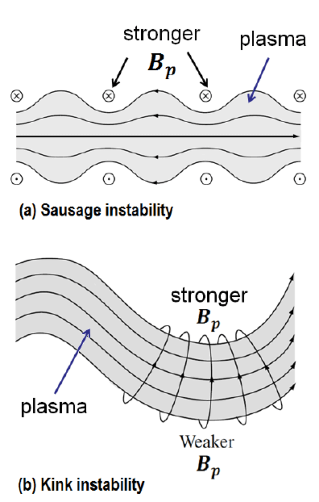
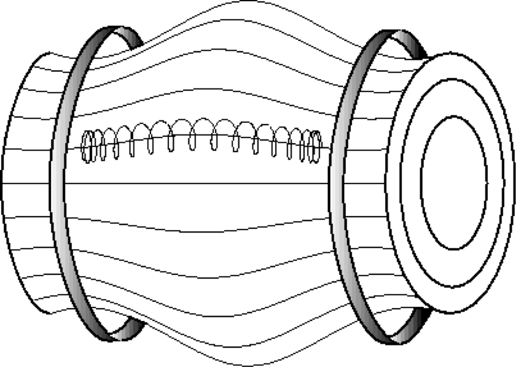
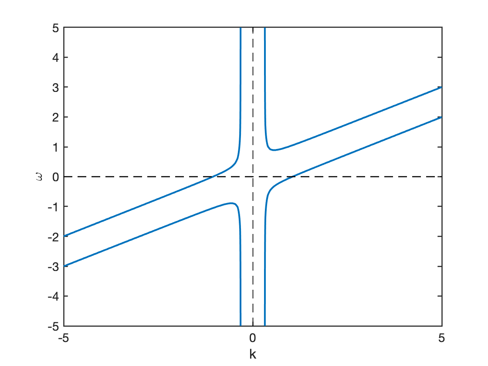
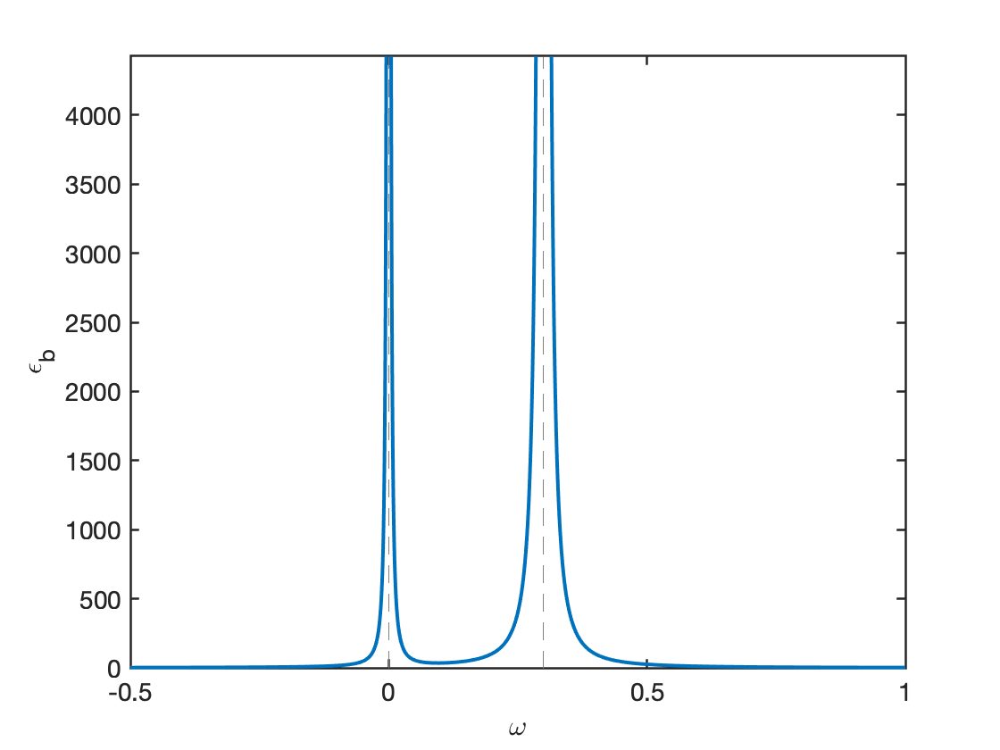
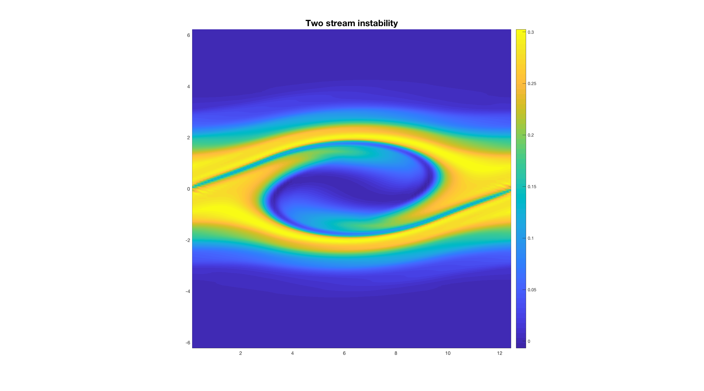
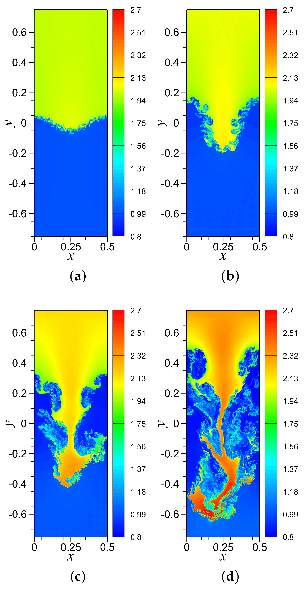
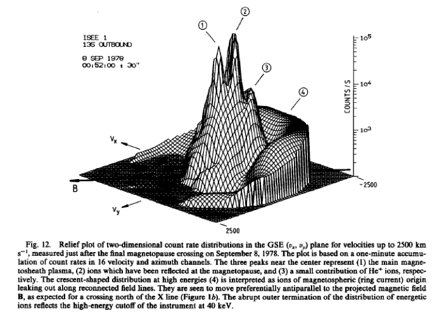
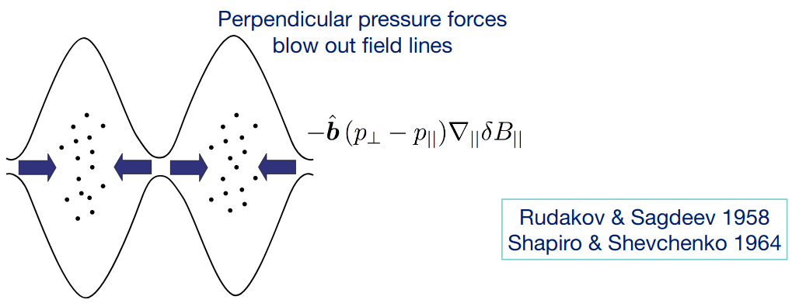

9 Stability
This chapter discusses plasma equilibrium and stability, or more precisely, instability. We are interested in when, where, and how instabilities arise in plasmas.
Magnetic fields are ubiquitous in cosmological objects. General questions exist about why are they of the form that they are:
- Why does this particular form remain?
- How does it get to this form?
Anything that reorganizes magnetic field is a transport phenomenon therefore instabilities are of great interest. From hydrodynamic instabilities to plasma instabilities, we need to realize the role of magnetic field and kinetic physics in the instability process:
- Existing hydro-instability may be affected by the presence of magnetic field
- Instability may be driven by presence of magnetic fields
- Instability that does not exist in hydrodynamics may arise in the kinetic description.
There exists a massive catalogue of plasma instabilities.
| Type | Description |
|---|---|
| Beam acoustic instability | |
| Bump-on-tail instability | |
| Buneman instability | |
| Cherenkov instability | |
| Chute instability | |
| Coalescence instability | |
| Collapse instability | |
| Counter-streaming instability | |
| Cyclotron instabilities | Alfvén, electron, electrostatic, ion, magnetoacoustic |
| Disruptive instability | |
| Double mission instability | |
| Drift instability | |
| Electrothermal instability | |
| Fan instability | |
| Filamentation instability | |
| Firehose instability | Section 10.1 |
| Free electron maser instability | |
| Gyrotron instability | |
| Helical instability | Helix |
| Interchange instability | Rayleigh-Taylor, flute, ballooning, kink, sausage |
| Ion beam instability | |
| Lower hybrid drift instability | Section 9.9 |
| Magnetic drift instability | |
| Modulation instability | |
| Non-Abelian instability | Chromo-Weibel |
| Pair instability | |
| Parker instability | Magnetic buoyancy |
| Peratt instability | |
| Pinch instability | |
| Tearing mode instability | Section 9.7.5 |
| Two stream instability | Kelvin-Helmholtz, Section 9.5 |
| Weak beam instability | |
| Weibel instability | |
| Z-pinch instability | Bennett pinck |
The basic methodology of examining instabilities
- Take the equations
- Linearize about an equilibrium solution
- Add some perturbations and see what happens
- Look for normal mode solutions \(e^{i(\mathbf{k}\cdot\mathbf{x}-\omega t)}\) and find a relationship between the growth rate \(\Im(\omega)\) and the wavenumbers of the disturbance \(\mathbf{k}\) and the parameters of the problem (i.e. dispersion relation).
- Use the MHD energy principle: calculate \(\delta W\), the change in potential energy associated wit the disturbance, and look for disturbances with \(\delta W<0\) (the existence of any one means unstable; need \(\delta W>0 \forall\) types of disturbances).
9.1 Analogy of the Energy Principle
First, let us have an intuitive inspection from the energy principle. In classical mechanics, we learn that motion acts to lower the energy in the system. For the simplest Rayleigh-Taylor instability between two fluids with different density, we can easily decide if there is an instability by checking the total potential energy change. In a current-carrying plasma, similar motions can be developed. The energy can be expressed as
\[ W=\frac{1}{2}LI^2 \]
where \(L\) is the inductance and \(I\) is the current. The magnetic flux can be written as
\[ \Phi = LI \]
so the energy can also be written as
\[ W=\frac{\Phi^2}{2L} \]
The relation between magnetic flux and current is similar to charge and voltage, \(Q=CV\), where \(C\) is the electric capacity. In a system where magnetic flux \(\Phi\) is conserved (e.g. ideal MHD), plasma lowers its potential by increasing its inductance \(L\). Check (Bellan 2008) P315.
- current loop, hoop force, increase area;
- sausage mode;
- current wire into helix.
9.2 Implication of Single Particle Motion on Instabilities
This section provides some qualitative understanding of instabilities in plasma. Thinking of instabilities from the prospective of single particle motion provides us the physical intuition of the causes and development of instabilities from a very basic level.
9.2.1 Equilibrium stability of a plasma from drifts
A key problem in nuclear fusion is to confine plasma. In the first stage, we need current loops around a torus tube (ADD FIGURE!) to provide a toroidal magnetic field \(\mathbf{B}_t\) along the torus. Let us take a look at a torus cut. (ADD FIGURE!) \(\nabla B_0\) is pointing towards the inside. \(\mathbf{B}_0\) points outside the plane, so the gradient-curvature drift will lead electrons upward and ions downward, which in turn creates a E field pointing upwards. \(\mathbf{E}\times\mathbf{B}\) drift then will lead both electrons and ions towards the outer boundary. Eventually we will lose the plasma. One way to fix this is to add \(\mathbf{J}_t\), an internal plasma current in the toroidal direction to generate a poloidal \(\mathbf{B}_p\), so that the magnetic field is stronger on the boundary than that at the center. In this way the total magnetic field becomes a helix.
Consider the poloidal magnetic field generated by \(\mathbf{J}_t\). One step further, our question is: will the plasma tube be stable under infinitesimal perturbations to the ideal cylinder configuration? The answer is no. Imagine a small perturbation shown as in Figure 9.1 b. \(\nabla B\) points from weak B to strong B regions. On the convex side, the gradient-curvature drift will lead ions to the left and electrons to the right, which in turn generates an electric field pointing left to right. Thereafter the \(\mathbf{E}\times\mathbf{B}\) drift will further drag the plasma to the convex region, and the whole system can never return to equilibrium. This the current-carrying plasma instability is called kink instability. The situation described here is sometimes referred to as linear kink instability. The kink mode can carry currents. Another similar mode is the sausage instability as shown in Figure 9.1. Also note that a sufficiently strong \(B_z\) (not poloidal/toroidal component) can stabilize these instabilities.

Another famous instability is the Rayleigh-Taylor instability. In fluid dynamics, Rayleigh-Taylor instability happens due to gravity. Here in plasma physics, the role of gravity force is replaced by the electromagnetic force. Imagine a situation where plasma are located at \(z>0\) region, below which is a vacuum space. There is a B field pointing outside the plane while \(\nabla B\) is pointing upwards (\(B_{\text{up}}>B_{\text{down}}\)). Due to gradient drift on the boundary, ions will move to the left while electrons will move to the right, where a E field pointing left to right is created. Thus the \(\mathbf{E}\times\mathbf{B}\) drift will lead plasma from upper region to lower region, and eventually breaks the interface. (Actually I have some questions for this figure: it seems to me that it is impossible to decide which part of the interface is changing first?)
9.2.2 Stability of magnetic mirror in the scope of single particle motion
We can deduce the stability of magnetic mirror by assuming a initial small perturbation along the boundary. In the center cross-section cut, first there is a centrifugal force pointing outward, which will cause electrons drifting to one way and ions drifting to the other way. The charge separation will generate an electric field. The \(\mathbf{E}\times\mathbf{B}\) drift will then pull the plasma further out if there’s a ripple, which will lead to instability. Several names describe the same thing: flute instability, R-T instability, interchangeable instability, gravitational instability and so on. This instability propagates at Alfvén speed.

In general, we can define two configuration categories: the unstable situation, where \(\mathbf{B}\) has a “bad” unfavorable curvature, and the stable situation, where \(\mathbf{B}\) has a “good” favorable curvature. This depends on whether or not the magnetic pressure in the vacuum is stronger than that inside the plasma. In a basic magnetic mirror, the plasma on the center boundaries are unstable, while those around the coil curvature are stable.
A famous Russian scientist Ioffe introduced conducting bars around the mirror to create an absolute minimum B-geometry, where in any point away from the center the B field is stronger. This indeed supresses the R-T instability, but the whole system is, unfortunately, still unstable due to micro-instabilities caused by lost cone distribution. The inverted population (more high speed particles than low speed ones) will lead to instabilities. Later scientists came up with the idea of adding cold gas to modify the distribution, but the cold gas injection procedure eventually kills the mirror configuration.
9.2.3 Stability in the Tokamak
In a classical Tokamak geometry, the poloidal and toroidal magnetic field together created a spiral around the torus. \[ \begin{aligned} \mathbf{B}=\mathbf{B}_T+\mathbf{B}_P \\ B=\sqrt{{B_T}^2+{B_P}^2}\approx B_T \end{aligned} \]
The field strength goes down as \(R\) increases, which implies that the inner semi-tube is in good curvature and the outer semi-tube is in bad curvature. By plotting mechanical potential=\(\mu B\) along the B-line as a function of \(\theta\), we can see that there are bumps and valleys. Particles with low \(v_\parallel\) are trapped, and those with large \(v_\parallel\) are transit particles. Tokamak is an average minimum B geometry, because particles spend longer time on hills (stable region) and less time in valleys (unstable region). This geometry is not as robust as Ioffe bar magnetic mirror, since some particles with small \(v_\parallel\) are always trapped in bad curvature region.
See more in (Chen 2016), Third Edition, Chapter Application of Plasmas.
9.3 Two-Stream Instability
The general procedure of obtaining the dispersion relation for electrostatic wave is:
- Get the linear equations from governing equations.
- Get the relation between linearized velocity and perturbed electric field.
- Get the relation between linearized density and perturbed electric field.
- Get the current response to the perturbed electric field.
- Get the dielectric tensor from Maxwell’s equation. Let \(|\pmb{\epsilon}|=0\). we finally obtain the dispersion relation. For an isotropic case, the dielectric tensor shrinks to a scalar, so we simply have \(\epsilon=0\).
Assume the simple equilibrium state in 1D (static and “cold” ions, “cold” electrons): \(m_i=\infty,E_0=B_0=0, p_i=p_e=0, n_i = n_0, T_e=T_i=0\). Whenever we say “cold” for plasma, it does not mean that the plasma is at absolute zero degree. This only means that we are considering a situation where the kinetic pressure plays no roles in the dispersion relation. This is also a non-magnetized plasma because \(\mathbf{B_0} = 0\). The variables including perturbations are \[ \begin{aligned} n_e &= n_0+n_1 \quad n_0\gg n_1\\ v_e &= v_0+v_1 \quad v_0\gg v_1 \\ E &= \cancel{E}_0 +E_1 \\ n_1(x,t)&=\tilde{n}_1e^{-i\omega t+ikx} \end{aligned} \]
The electron continuity and the momentum equations read \[ \begin{aligned} &\frac{\partial}{\partial t}(n_0+n_1)+\frac{\partial}{\partial x}\big[(n_0+n_1)(v_0+v_1)\big]=0 \\ &\frac{\partial}{\partial t}(v_0+v_1)+(v_0+v_1)\frac{\partial(v_0+v_1)}{\partial x}=-\frac{e}{m_e}\big[ (E_0+E_1)+(\mathbf{v}_0+\mathbf{v}_1)\times(\mathbf{B}_0+\mathbf{B}_1)_x \big] \end{aligned} \]
Again, for electrostatic waves, \(\mathbf{B}_1=0\). Neglecting high order terms, we get the linearized equations \[ \begin{aligned} \frac{\partial n_1}{\partial t}+\frac{\partial}{\partial x}(n_0 v_1)+\frac{\partial }{\partial x}(n_1v_0)&=0 \\ \frac{\partial v_1}{\partial t}+v_0\frac{\partial v_1}{\partial x}&=-\frac{e}{m_e}E_1 \end{aligned} \]
Assume wave-like perturbations \(e^{ikx-i\omega t}\) as in the Vlasov theory, from the linearized momentum equation we have \[ \begin{aligned} (-i\omega+ikv_0)v_1&=-\frac{e}{m_e}E_1 \\ \Rightarrow v_1&=\frac{\frac{e}{m_e}E_1}{i(\omega-kv_0)}. \end{aligned} \]
Substituting into the linear continuity equation, we get \[ \begin{aligned} -i\omega n_1+ikn_0v_1+ikn_1v_0=0 \\ \Rightarrow n_1=\frac{kn_0v_1}{\omega-kv_0}=\frac{kn_0}{\omega-kv_0}\frac{\frac{e}{m_e}E_1}{i(\omega-kv_0)}. \end{aligned} \]
This is the density perturbation in response to electric perturbation \(E_1\) in 2-fluid theory.
Then we can use the Poisson’s equation to generate the dielectric function \[ \begin{aligned} \nabla\cdot(\epsilon_0\mathbf{E}_1)+en_1\equiv\nabla\cdot(\epsilon \mathbf{E}_1)=0 \\ ik\epsilon_0 \tilde{E}_1+e\tilde{n}_1=ik\epsilon \tilde{E}_1 \\ \Rightarrow \epsilon=\epsilon_0 \Big[ 1-\frac{{\omega_{pe}}^2}{(\omega-kv_0)^2} \Big] \end{aligned} \]
which is the same as the result given by Vlasov theory (Y.Y. Problem Set #6.2). The advantage of using 2-fluid method is that we do not need to consider velocity space, which simplifies the derivation.
If we have two streams of electron described by \(g(v)\) as \[ \begin{aligned} g(v)=\frac{1}{2}\big[ \delta(v-v_1)+\delta(v-v_2) \big] \end{aligned} \]
with the oscillation frequency \(\omega_{p1},\omega_{p2}\) and number density \(n_{p1,1},n_{p2,1}\) respectively. In consideration of linear superposition property, we expect the dielectric function to be \[ \frac{\epsilon}{\epsilon_0}=1-\frac{{\omega_{p1}}^2}{(\omega-kv_1)^2}-\frac{{\omega_{p2}}^2}{(\omega-kv_2)^2} \]
If \(g(v)\) is a continuous distribution in general, \(g(v)=\sum_j g_j(v)\), then \[ \begin{aligned} \frac{\epsilon}{\epsilon_0}&=1-\int_{-\infty}^{\infty}\sum_j \frac{{\omega_{p,j}}^2 g_j(v)\mathrm{d}v}{(\omega-kv)^2} \\ &=1-\frac{{\omega_{pe}}^2}{k^2}\int_{-\infty}^{\infty}\frac{g(v)\mathrm{d}v}{(v-\omega/k)^2}. \end{aligned} \]
Note that \(\delta^\prime(x) = x^{-1}\delta(x)\). Here we reconstruct the result of Vlasov theory from 2-fluid theory. The equivalence of the two approaches is explored more thoroughly in later section Fluid Descriptions of Kinetic Modes (ADD LINK!).
Then what happens if ion motion is included? We still have “cold” ions at rest in equilibrium but now with ion perturbations in density. The Poisson’s equation should include ion density perturbation \[ \begin{aligned} \nabla\cdot(\epsilon_0 \mathbf{E}_1)&=\sum_{j=i,e} q_j n_{1j} \\ \Rightarrow \frac{\epsilon}{\epsilon_0}&=1-\frac{{\omega_{pe}}^2}{k^2}\int_{-\infty}^{\infty}\mathrm{d}v \frac{\partial g_e(v)/\partial v}{v-\omega/k}-\frac{{\omega_{pi}}^2}{k^2}\int_{-\infty}^{\infty}\mathrm{d}v \frac{\partial g_i(v)/\partial v}{v-\omega/k} \end{aligned} \]
In the simplest equilibrium case, \(g_e(v)=\delta(v-v_0),\ g_i(v)=\delta(v)\) \[ \frac{\epsilon}{\epsilon_0}=1-\frac{{\omega_{pe}}^2}{(\omega-kv_0)^2}-\frac{{\omega_{pi}}^2}{\omega^2} \]
Let \(\epsilon=0\), we get the dispersion relation \(\omega=\omega(k)\). An example dispersion relation and dielectric function property are shown in Figure 9.3 and Figure 9.4, respectively. Note that if you have a real wave number \(k\), you will get a pair of conjugate \(\omega\), one of which that lies between \(0\) and \(kv_0\) is an unstable mode. This will exhibit 2-stream instability as shown by the velocity space distribution in Figure 9.5.



\[ \begin{aligned} \epsilon(\omega,k)/\epsilon_0=1-\frac{{\omega_{pe}}^2}{(\omega-kv_0)^2}-\frac{{\omega_{pi}}^2}{\omega^2}=0 \notag \\ 1=\frac{{\omega_{pe}}^2}{(\omega-kv_0)^2}+\frac{{\omega_{pi}}^2}{\omega^2} \end{aligned} \]
Let \(\omega/\omega_{pe}=z,\ \frac{kv_0}{\omega_{pe}}=\lambda\), such that \(z\) and \(\lambda\) are dimensionless numbers. Let the right-hand side be \(f(z)\), then \[ f(z)=\frac{1}{(z-\lambda)^2}+\frac{{\omega_{pi}}^2/{\omega_{pe}}^2}{z^2}=\frac{z^2+(z-\lambda)^2 \omega_{pi}^2/{\omega_{pe}}^2}{(z-\lambda)^2z^2} \]
We can plot \(f\) to find the threshold of \(k\) when the instability will happen. See Y.Y’s Problem Set 6.3 for details.
9.4 Rayleigh-Taylor Instability
The Rayleigh-Taylor instability is probably the most important MHD instability. It is also called gravitational instability , flute instability or more generally, interchange instability. In ordinary hydrodynamics, a Rayleigh-Taylor instability arises when one attempts to support a heavy fluid on top of a light fluid: the interface becomes “rippled”, allowing the heavy fluid to fall through the light fluid. In plasmas, a Rayleigh-Taylor instability can occur when a dense plasma is supported against gravity by the pressure of a magnetic field.
The situation would not be of much interest or relevance in its own right, since actual gravitational forces are rarely of much importance in plasmas. However, in curved magnetic fields, the centrifugal force on the plasma due to particle motion along the curved field-lines acts like a “gravitational” force (Section 4.1.3). For this reason, the analysis of the Rayleigh-Taylor instability provides useful insight as to the stability properties of plasmas in curved magnetic fields. Rayleigh-Taylor-like instabilities driven by actual field curvature are the most virulent type of MHD instability in non-uniform plasmas.
Here we use a 2-fluid model and a so-called “diffuse boundary” model (Chen 2016) to describe it mathematically. Recall the structure of magnetic mirror: we have curved magnetic field lines and high density plasma at the center. From the discussion in Section 9.2.2, we know that the central part of magnetic mirror is unstable for Rayleigh-Taylor instability because of centrifugal force. Let us simplify the scenario and study the problem in Cartesian coordinates. The centrifugal force is irrelevant to particle charge and proportional to particle mass, so both ions and electrons have the same acceleration due to it. Let us replace the centrifugal force with gravity \(\mathbf{g}\). In Figure 9.6, there are high density plasma on top and low density plasma on the bottom, with a distribution \(\partial n_o/\partial x<0\).

9.4.1 2-Fluid Diffuse Boundary Model
This section is similar to Section 6.7 in (Chen 2016).
The continuity and momentum equations are:
\[ \begin{aligned} \frac{\partial n_j}{\partial t}+\nabla\cdot(n_j \mathbf{v_j})&=0 \\ \frac{\partial \mathbf{v_j}}{\partial t}+\mathbf{v_j}\cdot\nabla\mathbf{v_j}&=\frac{q_j}{m_j}\big( \mathbf{E}+\mathbf{v_j}\times\mathbf{B} \big)-\frac{\nabla P_j}{n_j m_j} + \mathbf{g} \end{aligned} \]
where \(j=e^-, i^+\) for electrons and ions.
Assume an one-dimensional case
\[ \begin{aligned} T_e = T_i = 0 \Rightarrow P_e=n_ek_BT_e = 0,\ P_i = n_ik_BT_i = 0 \\ n_0 = n_0(x), \frac{\partial n_0}{\partial x}<0\ (\textrm{nonuniform plasma}) \\ \mathbf{g}=g\hat{x}, g=\textrm{const.}>0 \\ \mathbf{B}_0=B_0\hat{z},\ B_0=\textrm{const.},\ \mathbf{E}_0=0\ (\textrm{no gradient/curvature drift}) \end{aligned} \]
Note that there is no diamagnetic current if \(P_e=P_i=0\) (no electric field so no current along \(\mathbf{B}_0\) ?):
\[ \begin{aligned} &\mathbf{J}_{de}\times\mathbf{B}_0=-\nabla P_e=0 \\ &\mathbf{J}_{di}\times\mathbf{B}_0=-\nabla P_i=0 \\ \Rightarrow & \mathbf{J}_{de}=\mathbf{J}_{di}=0 \end{aligned} \]
Instability arises when an equilibrium state is violated. What is the force that balances the gravity? It turns out to be the Lorentz force \(\mathbf{v}\times\mathbf{B}\) term: the separation of electrons and ions creates currents, and currents lead to force.
ADD FIGURE!
In equilibrium, \(\frac{\partial}{\partial t}=0\), \(\frac{\partial}{\partial y}\big[ n_{0j}(x)v_{0j} \big]=0,\) \(v_{0j}=\text{const.}\),
\[ \begin{aligned} &\frac{\partial{n_{oj}}}{{\partial t}}+\nabla\cdot(n_{oj}\mathbf{v}_{oj})=0 \\ &\frac{q_j}{m_j}\mathbf{v}_j\times\mathbf{B}_0+\mathbf{g}=0 \\ \Rightarrow & \begin{cases} \mathbf{v}_i=\frac{gm_i}{q_iB_0}(-\hat{y})=-\frac{g}{\Omega_i}\hat{y}=-\hat{y}v_{0i} \\ \mathbf{v}_e=\frac{gm_e}{q_eB_0}(\hat{y})=\frac{g}{\Omega_e}\hat{y}=\hat{y}v_{0e}\approx 0 (v_{0e}\ll v_{0i}) \end{cases} \end{aligned} \]
where \(\Omega_i,\ \Omega_e\) are the gyro-frequency for ions and electrons respectively.
Now, we introduce an electrostatic perturbation on this equilibrium state (\(\mathbf{B}_1(\mathbf{x},t)=0\), \(\nabla\times\mathbf{E}_1=-\frac{\partial \mathbf{B}_1}{\partial t}=i\omega\mathbf{B}_1=0\), \(\mathbf{E}_1\) can be written as a gradient of a scalar potential)
\[ \mathbf{E}_1(\mathbf{x},t)=-\nabla\Phi_1 = -\nabla\big[ \phi_1(x)e^{ik_y y-i\omega t} \big] \]
In addition, we adopt the so-called “local approximation”, i.e. we assume \(\partial \phi_1/\partial x=0\), \(\frac{\partial}{\partial x}\big[ E_1,\mathbf{v}_1,n_1 \big]=0\). This is a very drastic assumption that greatly simplifies the problem but cannot be justified. This assumption is commonly used in many textbooks, both explicitly and implicitly (e.g. (Bellan 2008) used this to treat universal instability. Remember in solving the Vlasov equations, we integrate along the unperturbed orbits, which also requires this assumption.)
In this case,
\[ \mathbf{E}_1=0\hat{x}+E_{1y}\hat{y}=\hat{y}\widetilde{E}_{1y}e^{ik_y y-i\omega t} \]
where \(\widetilde{E}_{1y}=-i k_y \phi_1\) is a constant.
Linearization:
\[ \begin{aligned} \frac{\partial}{\partial t}(n_0+n_1) +\nabla\cdot\big[ (n_0+n_1)(\mathbf{v}_0+\mathbf{v}_1) \big]&=0 \\ \frac{\partial}{\partial t}(\mathbf{v}_0+\mathbf{v}_1)+(\mathbf{v}_0+\mathbf{v}_1)\cdot\nabla(\mathbf{v}_0+\mathbf{v}_1)&=\frac{q}{m}\big[ \mathbf{E}_0+\mathbf{E}_1+(\mathbf{v}_0+\mathbf{v}_1)\times(\mathbf{B}_0+\mathbf{B}_1)\big]+\mathbf{g} \end{aligned} \]
Getting rid of the equilibrium and high-order terms, we have (Notice that \(\mathbf{g}\) does not even appear here! In MHD, it does, in a very explicit way.)
\[ \begin{aligned} i(k_yv_{0y}-\omega)n_1=-n_0 ik_y v_{1y} - v_{1x}\frac{\partial n_0}{\partial x} \\ \frac{\mathrm{d}}{\mathrm{d}t}\mathbf{v}_1=i(k_yv_{0y}-\omega)\mathbf{v}_1=\frac{q}{m}\big( \mathbf{E}_1+\mathbf{v}_1\times\mathbf{B}_0 \big) \end{aligned} \]
Now, from the linearized momentum equation, we can get the x and y components of perturbed velocity; intuitively, you can guess the expression:
\[ \begin{aligned} &v_{1,ix}=\frac{E_{1y}}{B_0},\ v_{1,ex}=\frac{E_{1y}}{B_0}\\ &v_{1,iy}=\frac{1}{\Omega_i}\frac{\mathrm{d}}{\mathrm{d}t}\Big(\frac{E_{1y}}{B_0} \Big)=\frac{i(k_yv_{0i}-\omega)}{\Omega_i}\Big( \frac{E_{1y}}{B_0}\Big),\ v_{1,ey}=\frac{1}{\Omega_e}\frac{\mathrm{d}}{\mathrm{d}t}\Big(\frac{E_{1y}}{B_0} \Big)\approx0 \end{aligned} \]
where in the x direction, it is the \(\mathbf{E}\times\mathbf{B}\) drift, and in the y direction, it is the polarization drift.
From the linearized continuity equation
\[ \begin{aligned} i(k_y v_{0,yi}-\omega)n_{1i} &= -n_0 ik_y v_{1,yi} - v_{1,xi}\frac{\partial n_0}{\partial x} \\ -i\omega n_{1e} &= - v_{1,xe}\frac{\partial n_0}{\partial x} \end{aligned} \]
Then we can get \(n_{1e}=n_{1e}(E_{1y}),\ n_{1i}=n_{1i}(E_{1y})\). Setting \(n_{1e}=n_{1i}\), we have the dispersion relation
\[ \omega(\omega-k_y v_{0i})=g\frac{1}{n_0}\frac{\partial n_0}{\partial x} \]
When \(k_y\rightarrow0\),
\[ \omega^2=g\frac{1}{n_0}\frac{\partial n_0}{\partial x}<0 \Rightarrow\ \text{instability!} \]
Let’s think about this 2-fluid approach for a while. Apparently, we cannot treat a sharp boundary, namely \(\frac{\partial n_0}{\partial x}=\delta(x)\), with exactly the same equations. However, it’s quite a surprise that MHD approach can easily do that, as we will see in the next section.
9.4.2 Single fluid MHD method
In equilibrium, \(\mathbf{g}=\hat{x}g,\ \mathbf{B}_0=\hat{z}B_0(x),\ \mathbf{U}_0=0,\ \mathbf{E}_0=0,\ \rho_0(x),\ p_0(x)\).
\[ \begin{aligned} \frac{\partial \rho_0}{\partial t}+\nabla\cdot(\rho_0 \mathbf{U}_0)=0 \\ 0=\frac{1}{\mu_0}\Big[ -\frac{1}{2}\frac{\partial}{\partial x}({B_0}^2)\Big] -\frac{\partial}{\partial x}p_0(x)+\rho_0(x)g \end{aligned} \]
Note that there’s a difference between cases where different pressure is dominant. For example, in z-pinch the magnetic pressure is dominant, while in a laser pulse, the thermal pressure is usually dominant.
Assume perturbations of the form
\[ \begin{aligned} p_1(\mathbf{x},t) &= p_1(x) e^{ik_y y-i\omega t} \\ \rho_1(\mathbf{x},t) &= \rho_1(x) e^{i k_y y-i\omega t} \\ \mathbf{U}_1 &=\frac{\partial \pmb{\xi}_1}{\partial t}=-i\omega\pmb{\xi}_1 \end{aligned} \]
where \(\pmb{\xi}_1\) is the displacement.
We can calculate each linear term:
\[ \begin{aligned} \big[(\mathbf{B}_0+\mathbf{B}_1)\cdot\nabla \big](\mathbf{B}_0+\mathbf{B}_1) \approx (\mathbf{B}_0\cdot\nabla)\mathbf{B}_1 + (\mathbf{B}_1\cdot\nabla)\mathbf{B}_0 = \big( B_0(x)\frac{\partial}{\partial z}\big)\mathbf{B}_1 \\ B^2 = (\mathbf{B}_0+\mathbf{B}_1)\cdot(\mathbf{B}_1+\mathbf{B}_1)\approx 2\mathbf{B}_0\cdot\mathbf{B}_1 \\ \mathbf{U} = \mathbf{U}_0+\mathbf{U}_1 = \mathbf{U}_1 \end{aligned} \]
The tension term has no x or y component, so we can just ignore it. Then the linearized momentum equation can be written as
\[ \rho_0\frac{\partial \mathbf{u}_1}{\partial t}=\rho_0\frac{\partial^2\pmb{\xi}_1}{\partial t^2}=-\nabla\Big( \frac{\mathbf{B}_0\cdot\mathbf{B}_1}{\mu_0}\Big) - \nabla p_1 +\rho_1\mathbf{g} \]
which can be separated into two scalar equations
\[ \begin{aligned} -\rho_0 \omega^2 \xi_{1x} &= -\frac{\partial}{\partial x}\Big( \frac{\mathbf{B}_1\cdot\mathbf{B}_1}{\mu_0}+p_1 \Big) +\rho_1 g \\ -\rho_0 \omega^2 \xi_{1y} &= -ik_y\Big( \frac{\mathbf{B}_1\cdot\mathbf{B}_1}{\mu_0}+p_1\Big) \end{aligned} \]
Assume incompressibility
\[ \nabla\cdot\mathbf{u}=0\Rightarrow \nabla\cdot\mathbf{u}_1=0,\ \nabla\cdot\pmb{\xi}_1=\frac{\partial \xi_{1x}}{\partial x}+ik_y \xi_{1y}=0 \]
The linearized continuity equation (Section 7.11) yields
\[ \rho_1=-\nabla\cdot(\rho_0\pmb{\xi}_1)=\xi_{1x}\frac{\partial}{\partial x}\rho_0 \]
Combining the last four equations, we have
\[ -\rho_0\omega^2 \xi_{1x} = -\frac{\partial}{\partial x}\Big[ \rho_0\omega^2 \frac{1}{{k_y}^2}\frac{\partial \xi_{1x}}{\partial x}\Big] - g\xi_{1x}\frac{\partial \rho_0}{\partial x} \tag{9.1}\]
This is the governing equation for the Rayleigh-Taylor instability, which is the same as Eq.(10.15) in (Bellan 2008). Note that here we have no assumption on the x-dependence; if we simply use the local approximation as before, this immediately gives you the identical result.
To treat the sharp boundary problem, we assume
\[ \begin{aligned} \rho_0= \left\{ \begin{array}{rl} \textrm{const.} & \text{if } x<0 \\ 0 & \text{if } x>0 \end{array} \right. \end{aligned} \]
Then for \(x<0\),
\[ \begin{aligned} \frac{\partial^2 \xi_{1x}}{\partial x^2} -{k_y}^2 \xi_{1x} = 0 \\ \Rightarrow\ \xi_{1x}=Ae^{k_y x} + Be^{-k_y x} \end{aligned} \]
and for \(x>0\),
\[ \begin{aligned} \frac{\partial^2 \xi_{1x}}{\partial x^2} -{k_y}^2 \xi_{1x} = 0 \\ \Rightarrow\ \xi_{1x}=Ce^{k_y x} + De^{-k_y x} \end{aligned} \]
The coefficient \(B\) and \(C\) must be zero because of infinite field requirement. Due to continuity at \(x=0\), we set
\[ A = D = \xi_0 \]
The density profile obeys
\[ \frac{\partial \rho_0}{\partial x}=-\rho_0\delta(x) \]
Integrating the governing Equation 9.1 from \(x=0^-\) to \(x=0^+\) yields
\[ \begin{aligned} &-\frac{\rho_0 \omega^2}{{k_y}^2}\frac{\xi_{1x}}{\partial x}\bigg|_{x=0^-}^{x=0^+} - g\xi_{1x}(-\rho_0)=0 \\ \Rightarrow &\omega^2=k_y g \end{aligned} \]
Therefore the growth rate is \(\gamma=\Im(\omega)=\sqrt{k_y g}\). You may realize that \(\mathbf{k}\cdot\mathbf{B}_0=0\) here, so this magnetic stablizing term vanishes in the dispersion relation.
9.4.3 2-fluid sharp boundary model
Now let’s go back and see if we can treat the sharp boundary problem with 2-fluid model. This is actually not easy: it is first solved by S.Chandraserkhar in the view of particle orbit theory. I believe there is a more `modern’ way of doing exactly the same thing, but here I just list the original derivation.
We consider a plasma at uniform temperature lying above a horizontal plane in a uniform gravitational field directed vertically downwards. There is a horizontal magnetic field in x direction uniform in each half volumn with a jump in field strength produced by a uniform horizontal current sheet at the boundary plane \(z=0\). The gravitational force is balanced by a pressure gradient in the plasma and by the jump in the magnetic pressure at \(z=0\).
We now suppose the boundary of the plasam at \(z=0\) to be rippled by a sinusoidal disturbance as shown in fig-RT_perturb. We may write for the displacement of the interface (ADD FIGURE!)
\[ \Delta z = a \sin ky \tag{9.2}\]
where \(a\), the amplitude of the disturbance, is considered small and \(k(=2\pi/\lambda)\) is the wave number of the disturbance in the y-direction. The drift resulting from gravity is given by
\[ \mathbf{V}_g = \frac{m}{q}\frac{\mathbf{g}\times\mathbf{B}}{B^2} \]
Since the magnetic field is in the x-direction, the electrons will drift to the right and the positive ions will drift to the left. The gravity drift, therefore, causes a charge separation in the plasma and the resulting boundary has the form shown in fig-RT_displacement. The surface charge \(\delta\sigma\) due to the separation (\(\delta\Delta z\)) of ions and electrons is given by
\[ \begin{aligned} \delta\sigma&=Ne\delta\Delta z \\ &=Ne\frac{\partial \Delta z}{\partial y}\delta y \\ &=e\frac{\partial \Delta z}{\partial y}V_g \delta t \end{aligned} \]
Therefore, the time rate of change of the surface charge density is given by
\[ \begin{aligned} \frac{\partial \sigma}{\partial t}&=NeV_g\frac{\partial}{\partial y}\Delta z \\ &=-Ne\frac{Mg}{eB}ak\cos ky \\ &=-\frac{NMeg}{B}ak\cos ky \end{aligned} \tag{9.3}\]
where in writing these expressions, we have neglected the electron drift, as being small in the ratio \(m/M\) compared to the ion drift. The electric field resulting from the surface charge can be computed in a straight-forward manner. In the region away from the boundary, we must have
\[ \nabla\cdot(\epsilon\mathbf{E})=0 \tag{9.4}\]
where \(\epsilon=\epsilon_0\big( 1+\frac{{\omega_{pi}}^2}{{\Omega_i}^2}\big)=...\) is the dielectric constant of the plasma. At the interface the electric field is determined by
\[ \nabla\cdot(\epsilon\mathbf{E})=\frac{1}{\mu_0}\frac{\sigma}{dz} \]
where \(\sigma\) is the surface charge density and \(\mathrm{d}z\) is the infinitesimal thickness of the layer. We now integrate this equation over an element of volumn \(\mathrm{d}S\mathrm{d}z\). The right-hand side gives the charge within the column element (\(\sigma\mathrm{d}S\)). Making use of Gauss`s theorem to transform the left-hand side, we obtain
\[ \epsilon E_z dS = \frac{1}{\mu_0}\sigma dS = \frac{1}{\mu_0}\sigma_0 \cos ky dS \]
Thus the electric field at the interface is given by
\[ \epsilon E_z = \frac{\sigma_0}{\mu_0}\cos ky \tag{9.5}\]
The electric field which satisfies Equation 9.4 within the plasma and the boundary condition Equation 9.5 at \(z=0\) has the components
\[ \begin{aligned} E_y &= \frac{\sigma_0}{\mu_0\epsilon}\sin ky\, e^{-kz} \\ E_z &= \frac{\sigma_0}{\mu_0\epsilon}\cos ky\, e^{-kz} \end{aligned} \]
with \(E_x=0\). These electric fields give rise to the drifts which can be computed from the equation
\[ \mathbf{V}=\frac{\mathbf{E}\times\mathbf{B}}{B^2} \]
Remembering that \(\mathbf{B}\) is in the x-direction, we obtain
\[ V_y = \frac{E_z}{B},\quad V_z = -\frac{E_y}{B} \]
From the foregoing equations we obtain
\[ \begin{aligned} V_y &= \frac{\sigma_0}{\mu_0 B}\cos ky\, e^{-kz} \\ V_z &=-\frac{\sigma_0}{\mu_0 B}\sin ky\, e^{-kz} \end{aligned} \]
It is clear from the solutions that the velocity field is divergence free and, therefore, does not cause any change in the density of the plasma except at the boundary. We have
\[ \frac{\partial}{\partial t}\Delta z(z=0)=V_z(z=0) = -\frac{\sigma}{\mu_0 B}\sin ky \tag{9.6}\]
From Equation 9.2 and Equation 9.6, we obtain the equation of motion for the amplitude \(a\):
\[ \frac{\mathrm{d}a}{\mathrm{d}t}=-\frac{\sigma_0}{\mu_0 B} \]
Equation 9.3 and Equation 9.5 yield
\[ \frac{\mathrm{d}\sigma_0}{\mathrm{d}t}=-\frac{NMg}{\mu_0B}ak \]
From the above two equations, we obtain
\[ \begin{aligned} \frac{\mathrm{d}^2 a}{\mathrm{d}t^2} &= \frac{1}{\mu_0\epsilon B}\frac{NMg}{B}ka \\ &\approx gka, \quad(\text{for } \epsilon \gg 1) \end{aligned} \]
(\(g=...\) from equilibrium). The solution of this equation is given by
\[ a(t) = a_0e^{\pm\sqrt{gk} t} \]
It is interesting to note that the rate of growth of the instability is exactly the same as in the Rayleigh-Taylor instability of a fluid supported against gravity by a second fluid which is weightless. The charge separation is able to overcome exactly the restraining influence of the magnetic field. This exact compensation occurs only in the limit of \(\epsilon\gg1\).
The same result can also be obtained using the rigorous formulation of the Boltzmann transport equation. However, in more complicated cases, the first order orbit theory gives results which agree with those obtained from the Boltzmann equation only in some special cases.
The essential mechanism which gives rise to the instability is the charge separation resulting from the gravity drift — drift arising from a force which does not depend upon the sign of the charge. If we consider a plasma configuration in a torus, the particles experience the centrifugal force \(m{v_\parallel}^2/R\) and the gradient B force \(m{v_\perp}^2/R\) which are both independent of the sign of the charge. Therefore, we should expect instabilities in a plasma confined to a torus.
9.5 Kelvin-Helmholtz instability
Kelvin-Helmholtz (KH) instability happens due to velocity shear. Typical examples are:
- plane crash
- flapping of flags
- diocotron instability in an electron sheet
- water wave, nonlinear phase
- laser ablation of metal
To understand why shear flow can lead to instability, we’ll first introduce the Bernoulli theorem in fluid mechanics. From the MHD momentum equation, take \(\partial/\partial t=0,\ \mathbf{J}=0,\ \mathbf{g}=0\), we obtain
\[ \begin{aligned} \rho\mathbf{v}\cdot\nabla\mathbf{v}=-\nabla p \end{aligned} \]
Using the natural coordinates, let \(\hat{t}\) be the unit tangent vector on a streamline, \(\hat{n}\) be the unit normal vector pointing from concave to convex side, and \(ds\) be the infinitisimal distance along streamline, we have
\[ \begin{aligned} \rho\mathbf{v}\cdot\nabla\mathbf{v} &= (\rho v\frac{\partial }{\partial s})\mathbf{v} =\rho v_s \frac{\partial }{\partial s}(\hat{t} v) =\rho v \Big( \frac{\partial v}{\partial s}\hat{t} + \frac{\partial \hat{t}}{\partial s}v\Big) \\ &=-\frac{\partial p}{\partial s}\hat{t}-\nabla_\perp p\\ \Rightarrow \hat{t}:\ pv\frac{\partial v}{\partial s}+\frac{\partial p}{\partial s}&=\frac{\partial}{\partial s}\Big( \frac{1}{2}\rho v^2 + p \Big) = 0 \end{aligned} \]
Therefore, \(\frac{1}{2}\rho v^2 + p = \text{const.}\) along a streamline for an incompressible flow. This is the classical Bernoulli equation.
Now, consider two flow layer with velocity shear at the plane interface in fig-two_layer (ADD FIGURE!). Imaging there’s a ripple on the layer interface pointing upward at \(Q\). If we examine the cross section at \(P\) and \(Q\) for the lower layer respectively, we find
\[ \begin{aligned} \text{flux at P} = \rho v A|_P = \text{flux at Q} = \rho v A|_Q \end{aligned} \]
Since density along field lines are constant (incompressible) and area \(A_P<A_Q\), we have \(v_P>v_Q\). From the Bernoulli equation, \(p_P<p_Q\). Similar for the upper layer, we get the pressure at \(P\) is larger than that at \(Q\). Therefore, the total pressure is pointing away from interface, which let the ripple grow.

Now we are ready to do more careful derivations. The governing equations are
\[ \begin{aligned} \nabla\cdot\mathbf{v}&=0 \\ \rho\Big( \frac{\partial\mathbf{v}}{\partial t}+\mathbf{v}\cdot\nabla\mathbf{v}\Big) &= -\nabla p \\ \end{aligned} \]
In equilibrium, suppose there is a velocity shear in the x direction, and the interface lies along the y direction,
\[ \begin{aligned} \rho_0 &= \text{const.} \\ p_0 &= \text{const.} \\ \mathbf{v}_0 &= \hat{y}v_{0y}(x) \end{aligned} \]
Assume linear perturbations of the form
\[ \begin{aligned} v_{1x}(\mathbf{x},t) &= v_{1x}(x)e^{i k_y y-i\omega t} \\ p_1(\mathbf{x},t) &= p_1(x)e^{i k_y y-i\omega t} \end{aligned} \]
so the linearized momentum equation is
\[ \rho_0\big( \frac{\partial \mathbf{v}_1}{\partial t}+\mathbf{v}_0\cdot\nabla\mathbf{v}_1 +\mathbf{v}_1\cdot\nabla\mathbf{v}_0 \big) = -\nabla p_1 \]
where
\[ \begin{aligned} \mathbf{v}_0\cdot\nabla\mathbf{v}_1 &= i k_y v_{0y} \mathbf{v}_1 \\ \mathbf{v}_1\cdot\nabla\mathbf{v}_0 &= v_{1x}\frac{\partial}{\partial x}v_{0y}(x)\hat{y} \end{aligned} \]
Then the x and y components of the linearized momentum equation give
\[ \begin{aligned} -i\omega \rho_0 v_{1x} +\rho_0 i k_y v_{0y}v_{1x} &= -\frac{\partial p_1}{\partial x} \\ -i\omega \rho_0 v_{1y} + \rho_0 i k_y v_{0y}v_{1y} + \rho_0 v_{1x}\frac{\partial}{\partial x}v_{0y}(x) &= -ik_y p_1 \end{aligned} \]
Together with the linearized incompressibility condition
\[ \frac{\partial v_{1x}}{\partial x} + ik_y v_{1y} = 0 \]
by eliminating \(p_1\) and \(v_{1y}\) we get
\[ \frac{\partial^2 v_{1x}}{\partial x^2} - \Big[ {k_y}^2 - \frac{k_y {v_{0y}}^{\prime\prime}(x)}{\omega-k_y v_{0y}(x)} \Big]v_{1x} = 0 \tag{9.7}\]
Now we are half way from obtaining the dispersion relation. For simplicity, let us assume three layer regions with Region I on the left (\(x<0\)), Region II in the middle (\(x\in(0,\tau)\)), and Region III on the right (\(x>\tau\)). Let the shear layer II thickness be \(\tau\). Set the velocity on the two sides \(v_1 = 0,\ v_2 = v_1+\Delta v \equiv v\), and \(k_y=k\). Then
\[ v_{0y}^{\prime\prime}(x) = \Big(\frac{v}{\tau}\Big)\big[ \delta(x) - \delta(x-\tau)\big] \]
except at \(x=0\) and \(x=\tau\). Equation 9.7 can be simplified to
\[ \frac{\mathrm{d}^2 v_{1x}}{\mathrm{d}x^2}-k^2 v_{1x} = 0 \]
In region I (\(x<0\)),
\[ \begin{aligned} v_{1x} &= \xi_0 e^{kx},\quad x<0 \\ \frac{\partial v_{1x}}{\partial x}\big|_{x=0_-} &= k\xi_0 \end{aligned} \]
In region III (\(x>\tau\)),
\[ \begin{aligned} v_{1x} &= \xi_\tau e^{-k(x-\tau)},\quad x>\tau \\ \frac{\partial v_{1x}}{\partial x}\big|_{x=\tau^+} &= -k\xi_\tau \end{aligned} \]
In region II (\(x\in(0,\tau)\)), we are looking for a solution which is a superposition of the solutions from both sides and is continuous at the boundaries
\[ \begin{aligned} v_{1x} &=\xi_\tau \frac{\sinh{kx}}{\sinh{k\tau}} + \xi_0\frac{\sinh{k(x-\tau)}}{\sinh{-k\tau}},\quad 0<x<\tau \\ \frac{\partial v_{1x}}{\partial x}\big|_{x=\tau^-} &= k\xi_\tau \frac{\cosh{k\tau}}{\sinh{k\tau}} - k\xi_0\frac{1}{\sinh{k\tau}} \\ \frac{\partial v_{1x}}{\partial x}\big|_{x=0^+} &= k\xi_\tau \frac{1}{\sinh{k\tau}} - k\xi_0\frac{\cosh{k\tau}}{\sinh{k\tau}} \end{aligned} \]
The continuity at \(x = 0\) requires \(V_{0y}=0, V_{1x}=\xi_0\). Integrating the governing Equation 9.7 from \(x=0^-\) to \(x=0^+\) yields
\[ -\xi_0 k\frac{\cosh{k\tau}}{\sinh{k\tau}} + \xi_\tau k\frac{1}{\sinh{k\tau}} - k\xi_0 + \frac{kv}{\omega\tau}\xi_0 = 0 \]
Integrating the governing Equation 9.7 from \(x=\tau^-\) to \(x=\tau^+\) yields
\[ -\xi_\tau k +\xi_0 k\frac{1}{\sinh{k\tau}} - \xi_\tau k\frac{\cosh{k\tau}}{\sinh{k\tau}} - \frac{kv}{\omega\tau}\xi_\tau = 0 \]
Combining the last two equations, we obtain
\[ 1 = \Big[ \sinh{k\tau} + \cosh{k\tau} + \frac{kv}{\omega-kv}\frac{\sinh{k\tau}}{k\tau}\Big] \Big[ \cosh{k\tau}+\sinh{k\tau} - \frac{kv}{\omega}\frac{\sinh{k\tau}}{k\tau}\Big] \]
which is the dispersion relation.
With the identity \(\sinh{k\tau} + \cosh{k\tau} = e^{k\tau}\), the dispersion relation can be simplified to
\[ \begin{aligned} 1 &= \Big[ e^{k\tau} + \frac{kv}{\omega-kv}\frac{\sinh{k\tau}}{k\tau}\Big] \Big[ e^{k\tau} - \frac{kv}{\omega}\frac{\sinh{k\tau}}{k\tau}\Big] \\ 1 &= e^{2k\tau} +e^{k\tau}\frac{(k\tau)^2}{\omega(\omega-kv)}\frac{\sinh{k\tau}}{k\tau} - \frac{(k\tau)^2}{\omega(\omega-k\tau)}\Big(\frac{\sinh{k\tau}}{k\tau}\Big)^2 \\ 1 &= e^{2k\tau} + \frac{(k\tau)^2}{\omega(\omega-kv)} \frac{\sinh{k\tau}}{k\tau} \Big[ e^{k\tau} - \frac{\sinh{k\tau}}{k\tau}\Big] \end{aligned} \]
Multiplying both sides by \(\omega(\omega-kv)\), we get
\[ \omega(\omega-k\tau)(1-e^{2k\tau}) = (kv)^2 \frac{\sinh{k\tau}}{k\tau} \Big[ e^{k\tau} - \frac{\sinh{k\tau}}{k\tau}\Big] \]
Assuming \(k\tau\ll 1\) (long wavelength approximation), \(e^{k\tau}\approx 1+k\tau\), we obtain
\[ \omega(\omega-kv) + \frac{(kv)^2}{2} \approx 0 \]
the solution of which is
\[ \omega=\frac{1}{2}kv(1\pm i),\quad k\tau \ll 1 \]
In general, the growth rate of KH is
\[ \omega_i = \frac{1}{2}|k_y \Delta v|,\quad k_y\tau\ll 1 \]
9.5.1 Diocotron instability on electron sheet
HAVEN’T CHECKED!
A diocotron instability is a plasma instability created by two sheets of charge slipping past each other. Energy is dissipated in the form of two surface waves propagating in opposite directions, with one flowing over the other. This instability is the plasma analog of the Kelvin-Helmholtz instability in fluid mechanics.
For the simplest case, we have a uniform electron sheet and a parallel constant magnetic field in the plane of the sheet, as illustrated in fig-electron_sheet. Due to space charge of electron sheet, there is electric field pointing towards the sheet in the upper and lower region. Consider a small perturbation (sinusoidal ripple) on an electron sheet. The coulomb force expels electrons outward, so the electrons will drift, according to the right-hand rule, to the left. The deficit of electrons is equivalent to some positive charge distribution, and thus created an electric field. The \(\mathbf{E}\times\mathbf{B}\) drift is pointing outward, so the perturbation is growing. Note that even though this problem looks innocent, but it is actually not easy. People, even the giants in plasma physics, made a lot of mistakes in the derivation!
If there is also a magnetic field inside the sheet, the \(\mathbf{E}\times\mathbf{B}\) drift will form a velocity gradient within the sheet, and lead to K-H instability. Denote \(\sigma_0\) as the surface charge density and \(\rho_0\) as charge density, we have \[ \sigma_0 = \rho_0 \tau = en_0\tau, \] and the velocity shear across the sheet \[ \Delta v = \frac{E_2}{B_0} + \frac{E_1}{B_0} = -\frac{1}{B_0}\frac{\sigma_0}{\epsilon_0}=-\frac{en_0\tau}{B_0 \epsilon_0}. \] Then from the dispersion relation of K-H mode, we have the growth rate \[ \omega_i = \frac{1}{2}k_y|\Delta v|=\frac{1}{2}k_y\Big|\frac{en_0\tau}{B_0 \epsilon_0}\Big|=\frac{1}{2}k_y \tau\frac{{\omega_{pe}}^2}{|\Omega_e|}, \] which is valid as long as \(k_y\tau\ll1\),i.e., long wave length limit.
(Bellan 2008) P537.
FIGURE NEEDED from H.W.3.4 Consider the diocotron instabity on a MELBA-like annular electron beam which propagates inside a metallic drift tube. Let $V = $ beam voltage, \(I =\) beam current, \(a =\) beam radius, \(\tau=\) annular beam thickness (\(\tau\ll 1\))m \(L=\) length of drift tube, $T = $ beam’s pulselength, \(B=\) axial magnetic field. Note that the combined self-electric and self-magnetic field of the beam produces a slow rotational \(\mathbf{E}\times\mathbf{B}\) drift in the \(\theta-\)direction. This azimuthal drift velocity, \(v_{0\theta}\), is much less than the axial velocity of the beam, but it is sheared.
In equilibrium,
\[ \begin{aligned} 0&=q(\mathbf{v}\times\mathbf{B}+\mathbf{E}) \\ \mathbf{v}&=v_{0\theta}\hat{\theta} + v_{0z}\hat{z} \\ \mathbf{B}&=B_{0\theta}\hat{\theta} + B_{0z}\hat{z} \\ \Rightarrow & v_\theta - v_z B_\theta + E_r = 0 \end{aligned} \]
From Ampère’s law,
\[ \begin{aligned} B_{0\theta}\cdot 2\pi (a+\tau) \approx B_\theta \cdot 2\pi a = \mu_0 2\pi a \tau J_z \\ \Rightarrow J_z = \frac{1}{\mu_0\tau} B_{0\theta} = -en_0 V_{0z} \end{aligned} \]
From Gauss’s law,
\[ \begin{aligned} \nabla\cdot\mathbf{E} = \frac{\rho}{\epsilon_0} = \frac{-en_0}{\epsilon_0} \\ E_r\cdot 2\pi a \Delta = \frac{-en_0}{\epsilon_0}\cdot 2\pi a\tau \Delta \\ \Rightarrow E_r = \frac{1}{\epsilon_0}\tau(-e)n_0 \end{aligned} \]
Substituing \(E_r\) and \(J_z\) into the radial force balance equation, we obtain
\[ \begin{aligned} V_{\theta}\big|_{r=a+\tau} &= \frac{1}{B_{z}}[V_{0z}B_\theta - E_r]\big|_{r=a+\tau}\\ &=\frac{1}{\gamma^2}\frac{E_r}{B_z} \end{aligned} \]
where \(\gamma=(1-\beta)^{-1/2}=1+V/(511\text{ keV})\), and \(\beta= V_{0z}/c\).
Let \(\nu=\frac{I}{\beta I_A}\) be the Budker parameter, \(I_A=4\pi\epsilon_0 mc^2/e=17\,\text{kA}\) be the Alfvén-Lawson current, and \(\Omega=\frac{eB_{0z}}{m_e}\) be the nonrelativistic cyclotron frequency associated with the axial B field, we have
\[ V_\theta\big|_{r=a+\tau} = \frac{2c^2\nu}{\Omega a\gamma^2} \]
At \(r=a\), \(V_\theta=0\) because there’s no E field. Therefore the velocity shear in \(\hat{\theta}\) is
\[ \Delta V_{\theta} = V_\theta\big|_{r=a+\tau} - V_\theta\big|_{r=a} =\frac{2c^2\nu}{\Omega a \gamma^2} \]
Then from the analysis of K-H instability, the temporal growth rate \(\omega_i\) is given by
\[ \begin{aligned} \omega_i &= \frac{1}{2}|k_\theta \Delta V_{0\theta}| \\ &=\frac{1}{2}\frac{m}{a}\frac{2c^2\nu}{\Omega a \gamma^2} \end{aligned} \]
For long wavelength limit, let \(m=1\).
For MELBA-like beam with the following parameters, \(V=700\text{keV},\ I=1\text{kA},\ a = 5\text{cm},\ \tau=0.5\text{cm},\ T=500\text{ns},\ L=1\text{m},\ B=2\text{kG}\),
\[ \omega_i =1.18\times 10^7 \text{s}^{-1} \]
The total number of e-folds of the instability growth during the pulse time T is
\[ \omega_i T \approx 5.9 \]
Even though this is large, K-H instability will not stay at the initial position and grow in time; instead it will be transported. It is more meaningful to estimate the spatial growth by evaluating the total number of e-folds experienced by a signal of some frequency as it propagates along the machine length L:
\[ k_i L =\frac{\omega_i}{V_{0z}}L = \omega_i \frac{L}{\beta c}\approx 0.04 \]
Therefore we don’t need to worry too much about this instability.
9.6 MHD Stability
\[ \mathbf{J}\times\mathbf{B} = \nabla p \]
\[ \mathbf{J}_\perp = \frac{\mathbf{B}\times\nabla p}{B^2} \]
The current is often called the diamagnetic current. It arises from the plasma pressure gradient.
Using Ampère’s law we can write the magnetic force in the form
\[ \mathbf{J}\times\mathbf{B} = -\nabla\Big( \frac{B^2}{2\mu_0}\Big) + \frac{1}{\mu_0}(\mathbf{B}\cdot\nabla)\mathbf{B} \tag{9.8}\]
which separates into the magnetic pressure term and the magnetic tension term.
If we use an anisotropic description of the thermal pressure term, Equation 9.8 can be written as
\[ \mathbf{J}\times\mathbf{B} = -\nabla_\perp\left( p_\perp + \frac{B^2}{2\mu_0}\right) + \left( 1+\frac{p_\perp - p_\parallel}{B^2/\mu_0}\right)\mathbf{B}\cdot\nabla\mathbf{B} \tag{9.9}\]
9.6.1 Harris Current Sheet
An example of a MHD equilibrium configuration is the Harris current sheet, in which the variations in the magnetic field and plasma pressure over the current sheet balance each other In a 1D Harris current sheet the magnetic field (assumed here to be in the \(z\)-direction) is given by
\[ \mathbf{B} = B_0 \tanh\Big( \frac{z}{\lambda} \Big) \hat{y} \]
The pressure is given by
\[ p = p_0 \cosh^{-2}\frac{z}{\lambda} \]
where \(p_0 = B_0^2/(2\mu_0)\). The current density is then
\[ J_y(z) = \frac{B_0}{\mu_0 \lambda}\text{sech}^2\Big(\frac{z}{\lambda}\Big) \]
Harris current sheet can be taken as the first approximation of the Earth’s magnetotail that can stay stable for long time periods.
9.6.2 θ-Pinch and Z-Pinch
θ-pinch and Z-Pinch are both 1D equilibrium configurations expressed in cylindrical coordinates. In a θ-pinch cylindrical coils drive an elecric current and the magnetic field is axial, while in a Z-pinch the electric current is axial and the magnetic field is toroidal.
9.6.3 Force-Free Field
If \(\beta\ll 1\) in MHD equilibrium, the pressure gradient is negligible and thus
\[ \mathbf{J}\times\mathbf{B} = 0 \tag{9.10}\]
Such configurations are called force-free fields because the magnetic force on the plasma is zero. According to Equation 9.8 in a force-free field the magnetic pressure gradient \(\nabla(B^2/2\mu_0)\) is balanced by the magnetic tension force \(\mu_0^{-1}(\mathbf{B}\cdot\nabla)\mathbf{B}\). In reality the force-free equilibrium is often a very good approximation of the momentum equation. It is also evident from Equation 9.10 that in a force-free field the electric current flows along the magnetic field. Such currents are commonly called field-aligned currents (FAC).
Using Ampère’s law we can write Equation 9.10 as
\[ (\nabla\times\mathbf{B})\times\mathbf{B} = 0 \]
From this we see that the innocent-looking equation \(\mathbf{J}\times\mathbf{B}=0\) is in fact nonlinear and thus difficult to solve.
The field-alignment of the electric crrent can be expressed as
\[ \nabla\times\mathbf{B} = \mu_0\mathbf{J} = \alpha(\mathbf{r})\mathbf{B} \]
where \(\alpha\) is a function of position. Taking divergence of this we get
\[ \mathbf{B}\cdot\nabla\alpha = 0 \]
i.e. \(\alpha\) is constant along the magnetic field.
In the case \(\alpha\) is a constant in all directions, the equation
\[ \nabla\times\mathbf{B} = \alpha\mathbf{B} \tag{9.11}\]
is linear. Taking a curl Equation 9.11 we get the Helmholtz equation:
\[ \nabla^2\mathbf{B} + \alpha^2\mathbf{B} = 0 \]
Solution to the Helmoltz with helical equation in cylindrical symmetry was presented by Lundquist in 1950 in terms of Bessel functions \(J_0\) and \(J_1\):
\[ \begin{aligned} B_R &= 0 \\ B_A &= B_0 J_0\Big( \frac{\alpha_0 r}{r_0} \Big) \\ B_T &= \pm B_0 J_1\Big( \frac{\alpha_0 r}{r_0} \Big) \end{aligned} \]
where \(B_r, B_A\), and \(B_T\) are radial, axial and tangential magnetic field components, respectively. The solution is a magnetic flux rope where magnetic field lines form helixes whose pitch angle increases from the axis (Figure 9.9). \(r\) is the radial distance from the flux rope axis, \(r_0\) is the radius of the flux rope and \(B_0\) is the maximum magnetic field magnitude at the center of the flux rope \(r=0\).

A special case of a force-free magnetic field is the current-free configuration \(\nabla\times\mathbf{B}=0\). Now the magnetic field can be expressed as the gradient of a scalar potential \(\mathbf{B}=\nabla\Psi\), and since \(\nabla\cdot\mathbf{B}=0\) it can be found via the Laplace equation
\[ \nabla^2\Psi = 0 \]
with appropriate boundary conditions and using the methods of potential theory.
For example, the Sun’s magnetic field structure is often modeled by the so-called Potential Field Source Surface (PFSS) model (Figure 9.10). The magnetic field is computed from the Laplace equation using spherical coordinates from the photosphere to the “source surface”, nominally chosen to be at 2.5 Solar radii. At the source surface the Sun’s magnetic field is assumed to be purely radial. The inner boundary conditions are obtained from solar magnetograms. Thus, PFSS assumes that there is no electric current in the corona.

9.7 MHD Modes
A simple but representative dispersion relation writes
\[ \omega^2=(\mathbf{k}\cdot\mathbf{V}_A)^2-\mathbf{k}\cdot\mathbf{g},\quad \text{where }\mathbf{V}_A=\frac{\mathbf{B}_0}{B_0}\cdot V_A \]
If we treat plasma as a single magnetized fluid,
\[ \rho\Big( \frac{\partial\mathbf{u}}{\partial t}+\underbrace{\mathbf{u}\cdot\nabla \mathbf{u}}_{\textrm{K-H inst.}} \Big)=\underbrace{-\nabla p}_{\text{ballooning inst.}} + \underbrace{\mathbf{j}\times\mathbf{B}}_{\text{kink, sausage inst.}}+\underbrace{\rho\mathbf{g}}_{\text{R-T inst.}} \]
Qualitatively, we can identify the source for each kind of instability in plasma. We will discuss them separately and in a set of combination below.
9.7.1 Kink Mode
A kink instability, is a current-driven plasma instability characterized by transverse displacements of a plasma column’s cross-section from its center of mass without any change in the characteristics of the plasma. It typically develops in a thin plasma column carrying a strong axial current which exceeds the Kruskal–Shafranov limit and is sometimes known as the Kruskal–Shafranov (kink) instability.
The kink instability was first widely explored in fusion power machines with Z-pinch configurations in the 1950s. It is one of the common magnetohydrodynamic instability modes which can develop in a pinch plasma and is sometimes referred to as the \(m=1\) mode.
If a “kink” begins to develop in a column the magnetic forces on the inside of the kink become larger than those on the outside, which leads to growth of the perturbation. As it develops at fixed areas in the plasma, kinks belong to the class of “absolute plasma instabilities”, as opposed to convective processes.
KeyNotes.plot_kink()The kink instability is the most dangerous instability in Tokamak. We have discussed this kind of micro-instability from the view of single particle motion in Section 9.2; here, we will explore this a little bit further.
String model
First, image a current-carrying plasma column, shown in the x-z plane in fig-kink_column. The metallic wire carries current under tension \(T\), and \(\mu=\)mass/length is the mass per length. From the basic mechanics, \(C_s=\sqrt{T/\mu}\) is the acoustic velocity in the system. Let the background field \(\mathbf{B}_0=\hat{z}B_0\) and the displacement \(\pmb{\xi}=\pmb{\xi}(\mathbf{x},t)\). We can show that, if the current \(\mathbf{I}\) is sufficiently strong, there will be kink instability.
ADD PLASMA KINK COLUMN FIGURE!
Assume the displacement in x-y plane has the form
\[ \pmb{\xi} = (\xi_x,\xi_y)e^{ik_z z-i\omega t} \]
The force law gives (i.e. the basic string model in mechanics textbooks)
\[ \mu\frac{\partial^2\pmb{\xi}}{\partial t^2}=T\frac{\partial^2\pmb{\xi}}{\partial z^2}+ \text{force per unit length} \]
Here, the external force per length is the Lorentz force (which is why we say the R-T instability is current-driven),
\[ \begin{aligned} \mathbf{I}\times\mathbf{B}&=\Big( \hat{x}I\frac{\partial \xi_x}{\partial z}+\hat{y}I\frac{\partial\xi_y}{\partial z}+\hat{z}0 \Big)\times B_0\hat{z} \\ &=IB_0 \Big( \hat{x}\frac{\partial\xi_y}{\partial z}-\hat{y}\frac{\partial \xi_x}{\partial z}\Big) \end{aligned} \]
In scalar forms, the force law gives
\[ \begin{aligned} \hat{x}:\ -\mu\omega^2 \xi_x &= T(-{k_z}^2)\xi_x + IB_0 \frac{\partial \xi_y}{\partial z}\\ \hat{y}:\ -\mu\omega^2\xi_y &= T(-{k_z}^2)\xi_y - IB_0 \frac{\partial \xi_x}{\partial z} \end{aligned} \]
Combining these two equations, we can easily get the dispersion relation
\[ \omega^2 = {k_z}^2{C_s}^2 \pm \frac{IB_0}{\mu_0 \mu}k_z \]
The dispersion relation is a representation of the force-law. The first term on the right-hand side is a stabilizing term due to tension; the second term with a minus sign is a destabilizing term due to Lorentz force. Note that the expression is very similar to R-T instability. (Which one?)
We can immediately estimate the scenario in a Tokamak. Take the radius of the column cut as \(a\), wave number \(k_z\sim 1/R\) (i.e. wave length is on the order of tokamak radius), \({C_s}^2={V_A}^2={B_{0z}}^2/(\mu_0\rho_0)\) (i.e. tension in plasma give rises to Alfvén wave), then the current is
\[ I=J_z(\pi a^2)=\frac{B_\theta 2\pi a}{\mu_0} \sim \frac{B_\theta a}{\mu_0} \]
and the mass per unit length is
\[ \mu =\rho_0(\pi a^2) \sim \rho_0 a^2 \]
The criterion for stability then becomes
\[ \begin{aligned} &{k_z}^2{C_s}^2 >\frac{IB_0}{\mu_0}k_z\Rightarrow \frac{1}{R}\frac{{B_0z}^2}{\mu_0\rho_0}>\frac{B_\theta a}{\mu_0}\frac{B_{0z}}{\rho_0 a^2} \\ \Rightarrow &\frac{a}{R}\frac{B_{0z}}{B_{0\theta}}>1 \end{aligned} \]
which is called the Kruskal-Shafranov stability criterion. Usually we define
\[ q\equiv\frac{a}{R}\frac{B_{0z}}{B_{0\theta}}=\frac{a}{R}\frac{B_t}{B_p} \]
as the safety factor. A real value for \(q\) is about 2 to 3.
Ideal MHD Approach
Now we use a more standard way to treat the kink mode. (Section 10.9 (Bellan 2008)) Assume we have a plasma column with radius \(a\). Inside the column, we assume infinite conductivity, \(\sigma=\infty\); outside the column, we assume vacuum so that we can only have current flow on surface \(r=a\). Thus, besides the universal background magnetic field in the z direction, we also have an azimuthal field due to surface current. (You will see later that the decay in \(\theta\) actually drives the kink instability.)
In equilibrium,
\[ \begin{aligned} r<a:\ &\mathbf{B}_0 = \hat{z}B_0 = \text{const.} \\ & p_0 = \text{const.},\ \mathbf{v}_0 = \text{const.},\ \mathbf{J}_0 = 0,\ \rho_0=\text{const.} \\ r>a:\ & \mathbf{B}_0 = B_0\hat{z} + B_{0\theta}\frac{a}{r}\hat{\theta} \\ & p_0=0,\ \rho_0 = 0 \end{aligned} \]
The force equation in equilibrium
\[ \nabla p_0 = \mathbf{J}\times\mathbf{B}_0 \]
is satisfied automatically both for \(r>a\) and \(r<a\).
Let us introduce a small perturbation
\[ \pmb{\xi}_{1r}(\mathbf{x},t) = \widetilde{\xi}_{1r}(r)e^{ikz + im\theta-i\omega t} \]
such that at \(r=a\),
\[ \pmb{\xi}_{1r}(\mathbf{x},t)\big|_{r=a} = \widetilde{\xi}_{1a}(r)e^{ikz + im\theta-i\omega t} \]
Before running into linearized equations, we can first take a look at different wave modes. That is, what will the perturbation looks like at a fixed time \(t\) with different \(m\)? For simplicity, let us assume \(t=0\). (You can always make a time shift.) The actual displacement is the real part of \(\pmb{\xi}\),
\[ \xi_{1r} = \xi_{1a}\cos(k_z z+m\theta) \]
For \(m=0\),
\[ \xi_{1r} = \xi_{1a}\cos(k_z z) \]
which is the sausage mode.
For \(m=1\),
\[ \xi_{1r} = \xi_{1a}\cos(k_z z+\theta) \]
If we draw the displacement down for \(k_z z=0,\frac{\pi}{2},\pi,\frac{3}{2}\pi\), you can see one rotation in a \(2\pi\) period, which indicates a shape of helix. This is often called the kink mode.
For higher \(m\),
\[ \xi_{1r} = \xi_{1a}\cos(k_z z+m\theta) \]
which looks like \(m\) intertwine helixes in one axial wavelength.
Now let’s return to the perturbed equations. Here we will assume incompressibility as the equation of state,
\[ \nabla\cdot\mathbf{v}=0 \]
The procedure to get the dispersion relation goes as follows:
- Express the perturbed magnetic field as a function of displacement inside and outside the surface.
- Relate the two regions by total force balance.
- \(r<a\)
\[ \mathbf{v}_1=\frac{\partial \pmb{\xi}_1}{\partial t} \Rightarrow \nabla\cdot\pmb{\xi_1}=0 \]
The linearized continuity equation gives
\[ \rho_1 = -\nabla\cdot(\rho_0\pmb{\xi}_1)=-\pmb{\xi}_1 \cdot\nabla\rho_0 - \rho_0\nabla\cdot\pmb{\xi}_1 =0 \]
The linearized force law gives
\[ \rho_0\frac{\partial^2\pmb{\xi}_1}{\partial t^2} = -\nabla p_1 +\frac{(\nabla\times\mathbf{B}_1)\times\mathbf{B}_0}{\mu_0} +\cancel{\mathbf{J}_0}\times\mathbf{B}_1 \]
And the Ohm’s law gives
\[ \begin{aligned} -\frac{\partial \mathbf{B}_1}{\partial t} &= \nabla\times\mathbf{E}_1 = \nabla\times(-\mathbf{v}_1\times\mathbf{B}_0) \\ \mathbf{B}_1 &= \nabla\times(\pmb{\xi}_1\times\mathbf{B}_0)=B_0 \nabla\times(\pmb{\xi}_1\times\hat{z})=ik_z B_0\pmb{\xi}_1 \end{aligned} \]
The last equivalence is obtained from the expansion of the second term into four terms and cancellation of zero terms.
In cylindrical coordinates,
\[ (\nabla\times\mathbf{B}_1)\times\mathbf{B}_0 = ik{B_0}^2 (\nabla\times\pmb{\xi}_1)\times\hat{z} \]
and
\[ \nabla\times\pmb{\xi}_1=\frac{1}{r} \begin{bmatrix} \hat{r} & r\hat{\theta} &\hat{z} \\ \partial_r & \partial_\theta & \partial z \\ \xi_{1\theta} & r\xi_{1\theta} & \xi_{1z} \end{bmatrix} \]
so the linearized force law gives
\[ \begin{aligned} -\omega^2 \xi_{1r} &= -\frac{1}{\rho_0}\frac{\partial p_1}{\partial r} +ik{v_A}^2 \big[ ik\xi_{1r} - \frac{\partial \xi_{1z}}{\partial r}\big] \\ -\omega^2 \xi_{1\theta} &= -\frac{im}{\rho_0 r}p_1 + k{v_A}^2 \big[ -\frac{im}{r}\xi_{1z} + ik\xi_{1\theta} \big] \\ -\omega^2 \xi_{1z}&= -ik_z p_0/\rho_0 \end{aligned} \]
Substituting the expression of \(\xi_{1z}\) into the other two equations, we can get
\[ \pmb{\xi}_1 = \frac{1}{\omega^2}\nabla\big( \frac{p_1}{\rho_0} \big) \]
From the incompressibility condition, we have
\[ \nabla\cdot\pmb{\xi}_1=0\Rightarrow \nabla^2 p_1 =0 \]
or in cylindrical coordinates,
\[ \frac{1}{r}\frac{\partial}{\partial r}\big( r\frac{\partial p_1}{\partial r} \big) - \frac{m^2 p_1}{r^2} - k^2 p_1 = 0 \]
Assume long wavelength limit and \(m=1\) (kink mode),
\[ kr<ka\ll 1 \]
we have
\[ \frac{1}{r}\frac{\partial}{\partial r}\big( r\frac{\partial p_1}{\partial r} \big) - \frac{p_1}{r^2} = 0 \]
the solution of which from Legendre polynomials (I need to check) is
\[ p_1 = Ar + \frac{B}{r} = Ar \]
because \(p_1\) is finite at \(r=0\).
So we have
\[ \begin{aligned} \pmb{\xi}_1 &= \frac{1}{\omega^2}\nabla\big( \frac{p_1}{\rho_0} \big)=\hat{r}\frac{A}{\rho_0\omega}e^{-i\omega t +i\theta+ikz} \\ \Rightarrow\ \xi_{1ra} &= \frac{A}{\rho_0\omega^2} \end{aligned} \]
Then the perturbed kinetic pressure on the surface is
\[ p_1(r=a^-) = Aa = \rho_0 \omega^2 \xi_{1ra} a, \]
and the perturbed magnetic field is
\[ \mathbf{B}_1=ikB_0\pmb{\xi}_1 \Rightarrow B_{1z}(r=a^-)=ikB_0 \xi_{1z}=-k^2 B_0\xi_{1ra} \]
- \(r>a\)
\[ \nabla\cdot\mathbf{B}_1=0,\ \nabla\times\mathbf{B}_1=0\Rightarrow \mathbf{B}_1 = \nabla\Psi_1,\ \nabla^2\Psi_1 = 0 \]
The solution of Laplace equation in cylindrical coordinates is
\[ \Psi = \big( \frac{C}{r}+\cancel{D}r\big)e^{-i\omega t+i\theta+ikz} \]
where \(D=0\) because \(\Psi <\infty\) when \(r\rightarrow\infty\).
The perturbed magnetic field is then
\[ \mathbf{B}_1=\mathbf{B}_{1e}\nabla\Psi = C\big[ -\frac{\hat{r}}{r^2}+i\frac{\hat{\theta}}{r^2}+ik\frac{\hat{z}}{r} \big]e^{-i\omega t+i\theta+ikz} \]
and at \(r=a\),
\[ \mathbf{B}_{1e}(r=a)=B_{1ra}[\hat{r}-i\hat{\theta}-ika\hat{z}]e^{i\theta+ikz}. \]
Now, we want to relate \(\xi_{1ra}\) and \(B_{1ra}\) by the “frozen-in” law. To first-order approximation, let \(\hat{n}\) be the direction normal to the perturbed boundary, we have
\[ (\hat{n}\cdot\mathbf{B})_1=0 \]
The equation for the perturbed boundary (Eq.(10.146) of (Bellan 2008)) gives
\[ r-\xi_r-a =0 \]
so
\[ \begin{aligned} \hat{n}&=\frac{\nabla(r-\xi_r-a)}{|\nabla(r-\xi_r-a)|} \\ &=\frac{\hat{r}-\frac{i}{r}\xi_{1ra}\hat{\theta}-ik\xi_{1ra}\hat{z}}{|\hat{r}-\frac{i}{r}\xi_{1ra}\hat{\theta}-ik\xi_{1ra}\hat{z}|} \\ &=\hat{r}-\frac{i}{r}\xi_{1ra}\hat{\theta}-ik\xi_{1ra}\hat{z} \end{aligned} \]
where the last equivalence holds because \(\xi_{1ra}/r\) and \(k\xi_{1ra}\) are both second-order in magnitude.
Therefore we get
\[ \begin{aligned} (\hat{n}\cdot\mathbf{B})_1 = ( \hat{r}-\frac{i}{r}\xi_{1ra}\hat{\theta}-ik\xi_{1ra}\hat{z} )\cdot (B_{1r}\hat{r}+B_{0\theta}\hat{\theta}+B_{0z}\hat{z})=0 \\ B_{1r} = B_{0\theta}\frac{i\xi_{1ra}}{a}+ik_z\xi_{1ra}B_{0z}= B_{1ra} = \frac{i\xi_{1ra}}{a}[B_{0\theta}+k_z a B_{0z}] = i\xi_{1ra}(\mathbf{k}\cdot\mathbf{B}) \end{aligned} \]
where \(\mathbf{k}=k_\theta \hat{\theta}+k_z\hat{z}=\frac{m}{r}\hat{\theta}+k_z\hat{z}=\frac{m}{a}\hat{\theta}+k_z\hat{z}\).
Finally, \(p+B^2/2\mu_0\) is continuous across perturbed boundary,
\[ \begin{aligned} \Big( p+\frac{B^2}{2\mu_0}\Big)_{1,interior} &= p_{1i} + \frac{2\mathbf{B}_{oi}\cdot\mathbf{B}_{1i}}{2\mu_0}=\rho_0\omega^2 a\xi_{1ra} - \frac{1}{\mu_0}k^2{B_0}^2a\xi_{1ra}=a\rho_0\xi_{1ra}(\omega^2-k^2{v_A}^2) \\ \Big( p+\frac{B^2}{2\mu_0}\Big)_{1,exterior}&=0+\frac{1}{2\mu_0}[{B_{0e}}^2+2\mathbf{B}_{oe}\cdot\mathbf{B}_1e]_{1,r=a+\xi_r} \\ &=\frac{1}{2\mu_0}\Big[ \cancel{{B_{0ze}}^2}+{B_{0\theta a}}^2\big( \frac{a}{a+\xi_{1r}}\big)^2+2(B_{0\theta}B_{1e\theta}+B_{0z}B_{1ez})\Big]_1 \\ &=\frac{1}{2\mu_0}\Big[ -\frac{2\xi_{1ra}{B_{0\theta a}}^2}{a}+2\big[ B_{0\theta}(-iB_{1ra})+B_{0z}(-ikaB_{1ra})\big]\Big]\\ &=\frac{1}{2\mu_0}\Big[ -\frac{2\xi_{1ra}{B_{0\theta a}}^2}{a}+\frac{2\xi_{1ra}}{a}\big[ B_{0\theta}+kaB_{0z}\big]^2\Big] \end{aligned} \]
where in one of the equivalence \(\frac{\xi_{1ra}}{a}\rightarrow0\),
\[ \Big( \frac{1}{1+\frac{\xi_{1r}}{a}}\Big)^2 \approx -2\frac{\xi_{1ra}}{a} \]
\[ \begin{aligned} \Big( p+\frac{B^2}{2\mu_0}\Big)_{1,interior} &= \Big( p+\frac{B^2}{2\mu_0}\Big)_{1,exterior} \\ \omega^2&=k^2{v_A}^2 + \frac{1}{a\mu_0 a^2 \rho_0}\big[ k^2 a^2{B_{0z}}^2+2kaB_{0\theta}B_{0z} \big]\\ \omega^2&= \frac{1}{a\mu_0 a^2 \rho_0}\big[2 k^2 a^2{B_{0z}}^2+2kaB_{0\theta}B_{0z} \big] =\frac{2k^2{B_{0z}}^2}{\mu_0\rho_0}\Big[ 1+\frac{B_{0\theta}}{kaB_{0z}}\Big] \end{aligned} \]
For stability, \(1>\big| \frac{B_{0\theta}}{ka B_{0z}}\big|\Rightarrow |ka|>\frac{B_{0\theta}}{B_{0z}}\). Take \(|k|=R^{-1}\), where \(R\) is the major radius, the stability condition becomes
\[ q\equiv \frac{a}{R}\frac{B_{0z}}{B_{0\theta}}>1 \]
and the \(q\) the called the safety factor. This is again the Kruskal-Shafranov limit for \(m=1\) kink mode. For sausage mode \(m=0\), the same approach as above can get
\[ B_{0\theta}< \sqrt{2} B_{0z} \]
for stability.
Note:
- This 2-region model can be generalized to 3-region model, which is more realistic compared to experiments. In the liner inertial fusion experiment, there is a mixture of R-T, sausage, kink and many high order modes.
- In general, the dispersion relation can be written as
\[ \omega^2 = (\mathbf{k}\cdot\mathbf{v_A})^2 - \text{destablizing term} \]
where the destablizing term can be gravity \(\mathbf{k}\cdot\mathbf{g}\), current \(I/I_{crit}\), tearing mode due to resistivity, etc.
- If we do the same analysis in Cartesian coordinates (x,y,z), there will be no sausage or kink mode! See HW3.
3-Region Problem
In 572 HW3.1, we have shown that a Cartesian liner is always stable for kink and sausage mode while a cylindrical liner isn’t. However, if you also consider the gravity (or equivalently, centrifugal forc, etc.) then you can have magnetic Rayleigh-Taylor (MRT) instability.
Here we show the derivation of dispersion relation in a 3-region problem in Cartesian liner. This method can be found in Chandrasekhar`s book on instability, P429. Consider Fig.1 shown in Prof.Lau’s paper “Anisotropy and feedthrough in magneto-Rayleigh-Taylor instability”. The interface of the regions are \(x=\alpha,\ x=\beta\). The governing equation including gravity is
\[ \frac{\mathrm{d}}{\mathrm{d}x}\Big\{ \rho_0\big[ \omega^2-(\mathbf{k}\cdot\mathbf{v}_A)^2\big] \frac{\partial \xi_{1x}}{\partial x} \Big\} - k^2 \big[ \rho_0\big( \omega^2 - (\mathbf{k}\cdot\mathbf{v}_A)^2\big)+g\frac{\partial \rho_0}{\partial x}\big] \xi_{1x} = 0 \]
If \(\rho_0=\text{const.}\Rightarrow g\frac{\partial \rho_0}{\partial x}=0\). Within region I, II, and III, the governing equation can be simplified to
\[ \frac{\mathrm{d}^2 \xi_{1x}}{\mathrm{d}x^2} - k^2\xi_{1x} = 0 \]
the general solution of which reads
\[ \xi_{1x} = Ae^{-kx} + Be^{kx} = C\sinh{k(x-\alpha)} + D\sinh{k(x-\beta)} \]
where \(A,B,C,D\) are coefficients. Cancelling out the unphysical solutions in each region, we have
\[ \begin{aligned} \text{I: }& \xi_{1x} = \xi_\beta e^{k(x-\beta)} \\ \text{II: }& \xi_{1x} = \xi_\alpha \frac{\sinh{k(x-\beta)}}{\sinh{k(\alpha-\beta)}} + \xi_\beta \frac{\sinh{k(x-\alpha)}}{\sinh{k(\beta-\alpha)}} \\ \text{III: }& \xi_{1x} = \xi_\alpha e^{-k(x-\alpha)} \end{aligned} \]
Note that there’s a jump for \(\rho_0(x)\) at \(x=\alpha,\beta\). Now we can integrate the governing equation across the boundaries,
\[ \begin{aligned} \int_{x=\alpha^-}^{x=\alpha^+} \mathrm{d}x \Big[ \frac{\mathrm{d}}{\mathrm{d}x}\Big\{ \rho_0\big[ \omega^2-(\mathbf{k}\cdot\mathbf{v}_A)^2\big] \frac{\partial \xi_{1x}}{\partial x} \Big\} - k^2 \big[ \rho_0\big( \omega^2 - (\mathbf{k}\cdot\mathbf{v}_A)^2\big)+g\frac{\partial \rho_0}{\partial x}\big] \xi_{1x} \Big]= 0 \\ \Rightarrow F_1(\xi_\alpha,\xi_\beta) = 0 \\ \int_{x=\beta^-}^{x=\beta^+} \mathrm{d}x \Big[ \frac{\mathrm{d}}{\mathrm{d}x}\Big\{ \rho_0\big[ \omega^2-(\mathbf{k}\cdot\mathbf{v}_A)^2\big] \frac{\partial \xi_{1x}}{\partial x} \Big\} - k^2 \big[ \rho_0\big( \omega^2 - (\mathbf{k}\cdot\mathbf{v}_A)^2\big)+g\frac{\partial \rho_0}{\partial x}\big] \xi_{1x} \Big]= 0 \\ \Rightarrow F_2(\xi_\alpha,\xi_\beta) = 0 \end{aligned} \]
Finally, from \(F_1\) and \(F_2\), we can get the dispersion relation
\[ \omega^4 - R\omega^2 + S = 0 \]
where \(R\) and \(S\) are functions of \(B_{01},B_{02},B_{03},\rho_{01},\rho_{02},\rho_{03},g,\Delta,k_y\) and \(k_z\).
Next, we can examine the temporal evolution of sinusoidal ripples at interfaces in the form
\[ \xi_{\alpha,\beta}(t) = A_1 e^{i\omega_1 t}+A_2 e^{-i\omega_3 t}+A_3e^{i\omega_3 t} + A_4 e^{-i\omega_3 t} \]
where \(\omega_1\) and \(\omega_3\) are two eigen mode from the dispersion relation. See the details in the paper. The details of dispersion relation is given in M.Weis, et. al., Phys. Plasmas 21, 122708 (2014), and the coulping of MRT, sausage and kink mode in a cyclindrical liner is given by M.Weis, et. al., Phys. Plasma 22, 032706 (2015).
Note: for RT/MRT,
\[ \xi_{RT}(t) \sim\xi_0 e^{\gamma t} < \xi_0 e^{\sqrt{gk}t} \]
the growth rate
\[ \gamma_{\max} = \sqrt{gk} \]
If we use \(s=\frac{1}{2}gt^2\Rightarrow \sqrt{2s}=\sqrt{|g|}t\),
\[ \xi_{RT}(t)<\xi_0 e^{\sqrt{2ks}} \]
which only depends on wavenumber and distance.
9.7.2 Sausage Mode
The \(m=0\) mode is known as the sausage instability. There is no \(B_z\) so we have purely toroidal field. The initial equilibrium is established with radially inward Lorentz force and outward pressure gradient. But it is unstable to interchange due to curvature. When a perturbation that causes the rings to shrink, magnetic field in the plasma increases so that the \(\mathbf{J}\times\mathbf{B}\) Lorentz force increases. There is nothing to counter this radially inward force increase, which leads to instability.
The dispersion relation is
\[ \omega^2 = -2\frac{p_0}{\rho_0}\frac{k}{R_c^2} \]
Adding \(B_z\) to the interior plasma stabilizes sausage instability: the magnetic pressure caused by \(B_z\) pushes back to oppose squeezing. The pressure balance at the interface gives
\[ p_0 + \frac{B_{0z}^2}{2\mu_0} = \frac{B_\phi^2}{2\mu_0} \]
With the modified dispersion relation
\[ \omega^2 = -2\frac{p_0}{\rho_0 a^2} + \frac{B_{0z}^2}{\mu_0\rho_0 a^2} \]
we have the condition for stability
\[ B_{0z}^2 > \frac{1}{2}B_\phi^2 \]
THIS IS PROBABLY DUPLICATE WITH THE PREVIOUS SECTION.
9.7.3 Kink Mode
However, even when the sausage mode is suppressed, the configuration is still unstable to the kink mode. This \(m=1\) mode retains circular cross-section of the tube and the perturbation is a kink of the tube into a helix. Without \(B_z\), the system is unstable for all \(k\); with \(B_z\), it is unstable for wavelengths long enough such that the pitch of the perturbation follows the pitch of the helix, i.e. the crests/troughs of the perturbations follow the fieldlines of tube
\[ B_\phi/R + k B_Z \ge 0 \]
In terms of a twist \(\Phi = 2LB_\phi/RB_z\), this criterion is equivalent to
\[ k\ge-\frac{\Phi}{2L} \]
The perturbation Lorentz force \(\mathbf{j}_1\times\mathbf{B}_0\) is zero. (???)
9.7.4 Ballooning Mode
The ballooning instability is a type of internal pressure-driven plasma instability usually seen in tokamak fusion power reactors or in space plasmas (Hameiri, Laurence, and Mond 1991). It is important in fusion research as it determines a set of criteria for the maximum achievable plasma beta. The name refers to the shape and action of the instability, which acts like the elongations formed in a long balloon when it is squeezed. In literature, the structure of these elongations are commonly referred to as “fingers”.
The narrow fingers of plasma produced by the instability are capable of accelerating and pushing aside the surrounding magnetic field in order to cause a sudden, explosive release of energy. Thus, the instability is also known as the explosive instability.
The interchange instability can be derived from the equations of the ballooning instability as a special case in which the ballooning mode does not perturb the equilibrium magnetic field.(Hameiri, Laurence, and Mond 1991) This special limit is known as the Mercier criterion.
KeyNotes.plot_balloon()9.7.5 Tearing Mode
KeyNotes.plot_tearing()Tearing mode is closely related to magnetic reconnection (Section 9.8). The reconnection process is very important because it is one of the main way of burst energy transformation. It is known that in collisionless systems current sheets are unstable against tearing instability, a process where the current tends to collapse into filaments. The tearing instability produces magnetic islands that then interact and merge together giving rise to a nonlinear instability phase, where the reconnection process is enhanced. See (Bellan 2008) P413 for more.
Linear Tearing Mode
Consider the interface between two plasmas containing magnetic fields of different orientations. The simplest imaginable field configuration is that illustrated in Figure 9.11. Here, the field varies only in the \(x\)-direction, and points only in the \(y\)-direction. The field is directed in the \(-y\)-direction for \(x<0\), and in the \(+y-\)direction for \(x>0\). The interface is situated at \(x=0\). The sudden reversal of the field direction across the interface gives rise to a \(z\)-directional current sheet at \(x=0\).

With the neglect of plasma resistivity, the field configuration shown in Figure 9.11 represents a stable equilibrium state, assuming, of course, that we have normal pressure balance across the interface. But, does the field configuration remain stable when we take resistivity into account? If not, we expect an instability to develop which relaxes the configuration to one possessing lower magnetic energy. As we shall see, this type of relaxation process inevitably entails the breaking and reconnection of magnetic field lines, and is, therefore, termed magnetic reconnection. The magnetic energy releases during the reconnection process eventually appears as plasma thermal energy. Thus, magnetic reconnection also involves plasma heating.
In the following, we shall outline the standard method for determining the linear stability of the type of magnetic field configuration shown in Figure 9.11, taking into account the effect of plasma resistivity. We are particularly interested in plasma instabilities which are stable in the absence of resistivity, and only grow when the resistivity is non-zero. Such instabilities are conventionally termed tearing modes. Since magnetic reconnection is, in fact, a nonlinear process, we shall then proceed to investigate the nonlinear development of tearing modes.
The equilibrium magnetic field is written
\[ \mathbf{B}_0=B_{0y}(x)\hat{y} \]
where \(B_{0y}(-x)=-B_{0y}(x)\). There is assumed to be non-equilibrium plasma flow. The linearized equations of resistive-MHD, assuming incompressible flow, take the form
\[ \frac{\partial \mathbf{B}}{\partial t}=\nabla\times(\mathbf{v}\times\mathbf{B}_0)+\frac{\eta}{\mu_0}\nabla^2\mathbf{B} \tag{9.12}\]
\[ \rho_0\frac{\partial\mathbf{v}}{\partial t}=-\nabla p +\frac{(\nabla\times\mathbf{B})\times\mathbf{B}_0}{\mu_0}+\frac{(\nabla\times\mathbf{B}_0)\times\mathbf{B}}{\mu_0} \tag{9.13}\]
\[ \nabla\cdot\mathbf{B}=0 \tag{9.14}\]
\[ \nabla\cdot\mathbf{v}=0 \tag{9.15}\]
Here, \(\rho_0\) is the equilibrium plasma density, \(\mathbf{B}\) is the perturbed magnetic field, \(\mathbf{v}\) the perturbed plasma velocity, and \(p\) the perturbed plasma pressure. The assumption of incompressible plasma flow is valid provided that the plasma velocity associated with the instability remains significantly smaller than both the Alfvén velocity and the sonic velocity.
Suppose that all perturbed quantities vary like
\[ A(x,y,z,t)=A(x)e^{iky+\gamma t} \tag{9.16}\]
where \(\gamma\) is the instability growth rate. The \(x\)-component of Equation 9.12 and the \(z\)-component of the curl of Equation 9.13 reduce to ???
\[ \gamma B_x = ikB_{0y}v_x + \frac{\eta}{\mu_0}\Big( \frac{\mathrm{d}^2}{\mathrm{d}x^2}-k^2\Big)B_x \tag{9.17}\]
\[ \gamma \rho_0 \Big( \frac{\mathrm{d}^2}{\mathrm{d}x^2}-k^2 \Big)v_x=\frac{ikB_{0y}}{\mu_0}\Big( \frac{\mathrm{d}^2}{\mathrm{d}x^2}-k^2-\frac{B_{0y}^{\prime\prime}}{B_{0y}}\Big)B_x \tag{9.18}\]
respectively, where use has been made of Equation 9.14 and Equation 9.15. Here, \(\prime\) denotes \(\mathrm{d}/\mathrm{d}x\).
It is convenient to normalize Equation 9.17 and Equation 9.18 using a typical magnetic field-strength, \(B_0\), and a typical scale-length, \(a\). Let us define the Alfvén time-scale
\[ \tau_A=\frac{a}{V_A} \]
where \(V_A=B_0/\sqrt{\mu_0 \rho_0}\) is the Alfvén velocity, and the resistive diffusion time-scale
\[ \tau_R=\frac{\mu_0 a^2}{\eta} \]
The ratio of these two time-scale is the Lundquist number:
\[ S=\frac{\tau_R}{\tau_A} \]
Let \(\psi= B_x/B_0\), \(\phi = i\,k\,V_y/\gamma\), \(\bar{x}=x/a\), \(F=B_{0y}/B_0\), \(F'\equiv dF/\mathrm{d}\bar{x}\), \(\bar{\gamma} = \gamma\,\tau_A\), and \(\bar{k} = k\,a\). It follows that
\[ \bar{\gamma}\,(\psi-F\,\phi) = S^{-1}\left(\frac{\mathrm{d}^2}{\mathrm{d}\bar{x}^2}-\bar{k}^2\right) \psi \tag{9.19}\]
\[ \bar{\gamma}^2\left(\frac{\mathrm{d}^2}{\mathrm{d}\bar{x}^2} -\bar{k}^2\right)\phi = -\bar{k}^2\, F \left( \frac{\mathrm{d}^2}{\mathrm{d}\bar{x}^2} -\bar{k}^2 - \frac{F''}{F}\right) \psi \tag{9.20}\]
The term on the right-hand side of Equation 9.19 represents plasma resistivty, whilst the term on the left-hand side of Equation 9.20 represents plasma inertia.
It is assumed that the tearing instability grows on a hybrid time-scale which is much less than \(\tau_R\) but much greater than \(\tau_A\). It follows that
\[ \begin{aligned} \tau_A \ll \gamma^{-1} \ll \tau_R \\ \gamma\tau_A \ll 1 \ll \gamma\tau_R \\ \bar{\gamma} \ll 1 \ll S\,\bar{\gamma} \end{aligned} \]
Thus, throughout most of the plasma we can neglect the right-hand side of Equation 9.19 and the left-hand side of Equation 9.20, which is equivalent to the neglect of plasma resistivity and inertia. In this case, the two equations reduce to
\[ \phi = \frac{\psi}{F} \tag{9.21}\]
\[ \frac{\mathrm{d}^2\psi}{\mathrm{d}\bar{x}^2} - \bar{k}^2\psi - \frac{F''}{F}\psi = 0 \tag{9.22}\]
Equation 9.21 is simply the flux freezing constraint, which requires the plasma to move with the magnetic field. Equation 9.22 is the linearized, static force balance criterion \(\nabla\times(\mathbf{j}\times\mathbf{B})=0\). These two equations are known collectively as the equations of ideal-MHD, and are valid throughout virtually the whole plasma. However, it is clear that these equations break down in the immediate vicinity of the interface, where \(F=0\) (i.e. where the magnetic field reverses direction). Witness, for instance, the fact that the normalized “radial” velocity, \(\phi\), becomes infinite as \(F\rightarrow 0\), according to Equation 9.21.
The ideal-MHD equations break down close to the interface because the neglect of plasma resistivity and inertia becomes untenable as \(F\rightarrow 0\). Thus, there is a thin layer, in the immediate vicinity of the interface, \(\bar{x}=0\), where the behaviour of the plasma is governed by the full MHD equations, Equation 9.19 and Equation 9.20. We can simplify these equations, making use of the fact that \(\bar{x}\ll 1\) and \(\mathrm{d}/\mathrm{d}\bar{x} \gg 1\) in a thin layer, to obtain the following layer equations:
\[ \bar{\gamma}\,(\psi - \bar{x}\,\phi) = S^{-1}\frac{\mathrm{d}^2\psi}{\mathrm{d}\bar{x}^2} \tag{9.23}\]
\[ \bar{\gamma}^2\,\frac{\mathrm{d}^2\phi}{\mathrm{d}\bar{x}^2} = - \bar{x}\,\frac{\mathrm{d}^2\psi}{\mathrm{d}\bar{x}^2} \tag{9.24}\]
Note that we have redefined the variables \(\phi\), \(\bar{\gamma}\), and \(S\), such that \(\phi\rightarrow F'(0)\,\phi\), \(\bar{\gamma}\rightarrow \gamma\,\tau_H\), and \(S\rightarrow \tau_R/\tau_H\). Here,
\[ \tau_H = \frac{\tau_A}{k\,a\,F'(0)} \]
is the hydromagnetic time-scale.
The tearing mode stability problem reduces to solving the non-ideal-MHD layer equations, Equation 9.23 and Equation 9.24, in the immediate vicinity of the interface, \(\bar{x}=0\), solving the ideal-MHD equations, @Equation 9.21 and Equation 9.22, everywhere else in the plasma, matching the two solutions at the edge of the layer, and applying physical boundary conditions as \(\vert\bar{x}\vert\rightarrow\infty\). This method of solution was first described in a classic paper (Furth, Killeen, and Rosenbluth 1963). The steps are listed in the farside note. The procedure is similar to the 3 layer solution of the K-H instability. After some maths, tearing mode dispersion relation is given as
\[ \gamma = \left[\frac{{\Gamma}(1/4)}{2\pi\,{\Gamma}(3/4)}\right]^{4/5}\, \frac{({\Delta}')^{4/5}}{\tau_H^{2/5}\,\tau_R^{3/5}} \]
where
\[ \begin{aligned} {\Delta} &= 2\pi\,\frac{{\Gamma}(3/4)}{{\Gamma}(1/4)}\,S^{1/3}\, Q^{5/4} \\ Q &= \gamma\,\tau_H^{2/3}\,\tau_R^{1/3} \end{aligned} \]
The tearing mode is unstable whenever \({\Delta}'>0\), and grows on the hybrid time-scale \(\tau_H^{2/5}\,\tau_R^{3/5}\).
9.8 Magnetic Reconnection
There are several key elements for understanding the physics of reconnection at a deeper level (Ji et al. 2022). First, the frozen-in properties in an electron-ion plasma are associated with the electron fluid due to its light weight. This is expressed in terms of the time changing rate of magnetic flux (Equation 4.24) through an arbitrary area, \(\mathbf{S}\) (enclosed by loop \(l\)), convecting with the electron flow as \(\mathrm{d}\Phi/\mathrm{d}t = \oint(\mathbf{E}+\mathbf{u}_e\times\mathbf{B})\cdot\mathrm{d}l = 0\). Thus, the frozen-in condition is regulated by the electron momentum equation (i.e. the generalized Ohm’s law)
\[ \underbrace{\mathbf{E} + \mathbf{V}_e\times\mathbf{B}}_{\text{Ideal}} = \underbrace{\mathbf{R}_\text{col}}_{\text{Collisional}} - \underbrace{\frac{\nabla\cdot\mathbf{P}_e}{en} - \frac{m_e}{e}\frac{\mathrm{d}\mathbf{u}_e}{\mathrm{d}t}}_{\text{Kinetic}} \tag{9.25}\]
where \(\mathbf{R}_\text{col}\) is the collisional force per electron charge. In a fully ionized collisional plasma, \(\mathbf{R}_\text{col}\approx \eta\mathbf{j}\) where \(\eta\) is the resistivity due to Coulomb collisions. If the terms on the right-hand side of Equation 9.25 are negligible, then \(\mathrm{d}\Phi/\mathrm{d}t \approx 0\) and the magnetic flux is “frozen-in” to the electron flow. For the generic reconnection layer illustrated in the middle panel of Figure 9.12, deviations from ideal evolution occur within the “diffusion region” (blue), where either finite resistivity or kinetic effects (electron inertia and pressure tensor) are important. Within the diffusion region, field lines converging from opposite sides of the layer can change connectivity.

The next key element for understanding the physics of magnetic reconnection is to grasp the remarkable global consequences of changing field line connectivity within a localized region. In particular, the newly reconnected field lines have a large curvature \(\mathbf{B}\cdot\nabla\mathbf{B}\) which produces a tension force — closely analogous to a stretched rubber band. Allowing for the possibility of pressure anisotropy, the MHD momentum equation perpendicular to magnetic field is
\[ \rho\frac{\mathrm{d}\mathbf{u}_\perp}{\mathrm{d}t} = -\nabla_\perp\left( p_\perp + \frac{B^2}{2\mu_0}\right) + \left( 1+\frac{p_\perp - p_\parallel}{B^2/\mu_0}\right)\mathbf{B}\cdot\nabla\mathbf{B} - \mathbf{F}_{\text{col}\perp} \tag{9.26}\]
where \(\mathbf{F}_\text{col}\) is due to collisions between ions (viscous force) and between ions and neutral particles (frictional force). For newly reconnected field lines, the magnetic tension in Equation 9.26 drives an outflow jet approaching the Alfvén speed \(V_\text{out} \approx V_A \equiv B_0/\sqrt{\mu_0 \rho}\) (\(B_0\) is the reconnecting field component). The resulting deficit in magnetic pressure pushes new field lines into the diffusion region with a maximum inflow velocity \(V_\text{in}\sim (0.01 \rightarrow 0.1) V_A\). As this process continues, the larger stressed region is relaxed, leading to a reconfiguration of the global magnetic field on fast Alfvénic time scales \(\sim L/V_A\). Assuming the diffusion regions remain small in comparison to the global scales, most plasma enters the flow jet across the magnetic separatrices as illustrated in Figure 9.12. This inflow is a consequence of changing the field line connectivity within the diffusion region, which causes the entire extent of the reconnected field lines to join the outflow. In this limit, the majority of the energy release is associated with the relaxation of field-line tension within outflow jets over long distances. Since the spatial extent of these jets is limited only by the macroscopic configuration, they are one of the most prominent signatures of reconnection in both in-situ and remote-sensing observations. Our primary focus is on situations where the available magnetic energy to drive reconnection is comparable or larger than the initial plasma thermal energy, corresponding to \(\beta\equiv p/(B_0^2/2\mu_0)\lesssim 1\). In these regimes, global relaxation of field-line tension is the ultimate “engine” for reconnection and is essentially “ideal”, thus operating in a similar manner for most applications, but with a few important exceptions. Plasma heating preferentially along the magnetic field (\(p_\parallel\gg p_\perp\)) can weaken the magnetic tension force in Equation 9.26, whereas in partially ionized regimes the jet formation is more complicated due to interactions with neutrals. In addition, non-ideal kinetic physics may persist along magnetic separatrices (see red lines in Figure 9.12) to larger distances, while in very large systems shocks may form along these boundaries and play a role in the energy conversion.
In contrast to the ideal physics driving the jet, the non-ideal terms within the diffusion region are intimately dependent upon the plasma conditions and spatial scales, and thus, a variety of different regimes are possible, as illustrated in the various panels of Figure 9.12. Since the outflow is always energetically limited to \(V_A\) in a quasi-steady state, mass conservation implies that the geometry of the diffusion region determines the dimensionless reconnection rate, \(R \equiv u_\mathrm{in}/V_A \approx \Delta/L\) where \(\Delta\) is the diffusion region thickness. The current understanding of the diffusion region physics has evolved over more than 60 years in three main stages, yet a full understanding remains elusive for large space and astrophysical problems.
9.8.1 Reconnection Rate
Reconnection rate quantifies the amount of magnetic flux transportation through the X-line. There are two kinds of reconnection rate:
- The dimensionless reconnection rate, defined as the ratio between the inflow magnetic flux and the outflow magnetic flux: \[ R \equiv \frac{B_\mathrm{in}u_\mathrm{in}}{B_\mathrm{out}u_\mathrm{out}} \approx \frac{u_\mathrm{in}}{u_\mathrm{out}} \tag{9.27}\]
The approximation is usually valid when we take the field values far away from the reconnection site. Observationally, this ratio is on the order of \(\mathcal{O}(0.1)\). There has been some argument based on geometry to explain this universal ratio in recent years.
- The dimensional reconnection rate, defined as the difference between the inflow magnetic flux and the outflow magnetic flux: \[ R \equiv B_\mathrm{in}u_\mathrm{in} - B_\mathrm{out}u_\mathrm{out} \tag{9.28}\]
When we think of a 2D X-line configuration in the X-Z plane, this is equivalent to the out-of-plane electric field \(E_y\).
9.8.2 Hall Field
Let X be the inflow direction, Z the outflow direction, and Y the out-of-plane direction. During magnetic reconnection,
- a quadrupolar out-of-plane or Hall magnetic field \(B_y\) is formed by the field aligned currents \(j_\parallel\) that flow in the vicinity of the magnetic separatrices when ion and electrons decouple on the length scales less than the ion inertial length (Sonnerup 1979). The quadruple Hall magnetic field was analyzed as a tearing mode eigenmode of the current layer (Terasawa 1983). The Hall effect introduces a coupling between the tearing mode perturbations (2D configuration in-plane \(\mathbf{B}\) components) and shear Alfvén mode perturbations (out-of-plane \(\mathbf{B}\) component).
- In the context of collisionless plasmas, ion-electron collisions are absent so that ions and electrons behave differently at micro-scale. On the ion scale, ions start to become demagnetized whereas electrons are still coupled to the magnetic field. The difference in the ion and electron motion produces charge separation, Hall electric fields and the associated electric current. (On the even smaller electron-scale, electrons are demagnetized and correspond to the “breaking” of the field line.) The spatial variation of Hall electric fields is mostly in X, normal to and pointing towards the current layer. Relevance of Hall effects in reconnection is considered important at the ion inertial scale, providing a source for non-ideal reconnection electric field. (In observations, the perpendicular scale of the Hall fields and current layer can be as small as electron scales as well?) The parallel scale of the Hall fields are much larger. Equivalently, Hall fields are associated with a wave vector \(\mathbf{k}\) so that \(k_x\gg k_z\) and \(1/k_x\) on the ion-scale.
The Hall fields are continuously produced quasi-steady structures accompanied with a timescale much longer than the ion gyroperiod. Their associated kinetic and magnetic energies propagate away from the reconnection layers carried by Alfvén waves. Numerical simulations suggest that it is primarily kinetic Alfvén waves (KAW, Section 7.7) which are excited in the vicinity of reconnection regions (Rogers+, 2001; Shay+, 2011), but further downstream in the exhaust it is primarily shear Alfvén waves (Gurram, Egedal, and Daughton 2021).
In observations, signatures of Hall magnetic fields are used as a working definition of collisionless magnetic reconnection in the Earth’s and planetary magnetosphere.
(Dai and Wang 2023) emphasized that the physics underlying the Hall effect is similar to that in KAW:
- Both can be described by the two-fluid equations.
- The temporal and spatial scales of Hall fields are exactly the same as those of KAW.
- The polarity of the Hall electric field (in X) and the Hall magnetic field (in Y) is also consistent with that of KAW.
- The ratio \(E_x / B_y\) of Hall fields is on the order of \(V_A\), similar to KAW.
- The current system of Hall fields are in the XZ-plane.
As the perpendicular wavelength of Alfvén wave becomes comparable to the ion gyroradius, the ions cannot follow the \(\mathbf{E}\times\mathbf{B}\) drift. This is because the wave electric field now is non-uniform in the trajectory of ion gyromotion. As a consequence, the ion transverse motion is modified by the finite-Larmor-radius (FLR) effect. Considering the kinetic correction, the ion actually follows \(\mathbf{E} = \mathbf{V}_i\times\mathbf{B} + \frac{1}{n_i q_i}\nabla\cdot\mathbf{P}_i\) in the transverse motion. The FLR effect is manifested in the ion pressure gradient term: the FLR effect is equivalent to a finite temperature for the ions on the fluid level. At the wavelength of ion-scale wavelength, electrons cannot follow ions in the transverse motion. The difference in the transverse motion of ions and electrons produces a charge separation and coupling to the electrostatic mode, and a quasi-electrostatic electric field is formed in the transverse direction. To remain quasi-neutral, electrons quickly move in the direction parallel to the magnetic field. In the parallel direction, these electrons undergo a force balance between a small parallel electric field and the electron pressure gradient in the case of KAW. The parallel motion of electrons created a field-aligned current (FAC) that is a distinct nature of Alfvén mode. The FAC induces a wave magnetic field perpendicular to the DC (background) magnetic field. A new physical scale length \(r_{iL}\), the ion gyroradius based on the electron temperature, for the current layer and outflow layer in fast reconnection. Through the diffusion region near the X-line, intense KAW turbulence is observed, suggesting that magnetic reconnection is a source of KAW. Thus KAW has been invoked as ingredients for fast reconnection.
In the direction parallel to the magnetic field (\(\hat{z}\)), \(B_y\) reverses but \(E_x\) remains its sign. This feature is related to the superposition of two KAW mode waves that propagate in the opposite direction and outward from the reconnection region. In the perpendicular direction, the Hall fields appears to exist only for one wavelength along \(\hat{x}\). This is related to the eigenmode (standing mode) structure of KAW in the current layer.
In the literature, the Hall electric field is usually considered to arise from the \(\mathbf{j}\times\mathbf{B}/n_e q\) term in the context of the generalized Ohm’s law Equation 5.17. The Hall term starts to become important at the ion inertial scale, contributing to the Hall electric field. Interestingly, the \(\mathbf{j}\times\mathbf{B}\) also represents a major force term in the one-fluid MHD momentum equation. The \(\mathbf{j}\times\mathbf{B}\) force could be important on the large MHD-scale and the argument for the origin of Hall electric field becomes ambiguous; from the MHD momentum equation, \(\mathbf{j}\times\mathbf{B}\) term is equivalent to the ion inertial effect, ion pressure effect and the electron pressure effect: \[ \rho\frac{{d\mathbf{u}}}{dt}+\nabla\cdot(\overleftrightarrow{P}_i+\overleftrightarrow{P}_e)=\mathbf{J}\times\mathbf{B} \tag{9.29}\]
which is derived from the sum of the two-fluid momentum equations multiplied by the mass of each species. The one-fluid MHD momentum equation Equation 9.29 together with the general Ohm’s law is nearly equivalent (with some extent of reduction?) to the two-fluid momentum for two species. The Hall electric field is equivalently described by either set of equations.
From the ion momentum equation \[ \mathbf{E} + \mathbf{u}_i\times\mathbf{B} = \frac{1}{n_i q_i}\nabla\cdot\overleftrightarrow{P}_i + \frac{m_i}{q_i}\frac{\mathrm{d}\mathbf{v}_i}{\mathrm{d}t} \tag{9.30}\]
The perpendicular component of the non-ideal electric field \(\mathbf{E} + \mathbf{u}_i\times\mathbf{B}\) is the Hall electric field at the ion kinetic scale; as seen on the RHS, two sources of Hall electric fields are the ion inertial term and the ion pressure gradient. From the KAW perspective, the Hall electric field is supported by the ion pressure gradient. In the regime of the temporal and spatial scale of KAW, the ion inertial term is small and on the order of \(\mathcal{O}(\omega^2/\Omega_i^2)\).
If the ion inertial term is neglected, Equation 9.30 becomes \[ \mathbf{E} + \mathbf{u}_i\times\mathbf{B} = \frac{1}{n_i q_i}\nabla\cdot\overleftrightarrow{P}_i \]
The \(\mathbf{u}_i\times\mathbf{B}\) term is kept since the ion flow may not be neglected near the X-line.
9.8.3 Kinetic Signatures of Diffusion Region
(The following part is from [Kinetic signatures of the region surrounding the X-line in asymmetric (magnetopause) reconnection] and [Fluid and kinetics signatures of reconnection at the dawn tail magnetopause-Wind observations].)
Electron diffusion region (EDR) is defined to be the electron-scale region surrounding the X-line in which magnetic connectivity is ultimately broken. Note that this definition is fundamentally non-local in nature.
- enhanced dissipation [e.g., Zenitani+, 2012]
- non-gyrotropic particle behavior [e.g., Scudder+, 2008; Aunai+, 2013; Swisdak 2016]
- electron distribution functions [e.g., Chen+, 2008, Ng+, 2011]
- In the two inflow regions, we expect a reduction in total pressure, magnetic field \(B_L\) and the plasma density \(n_i\) relative to ambient upstream conditions.
Some signatures also exist downstream of the diffusion region and along the separatrices. In practice people use a complementary approach for the identification.
Specifically for EDR, it should exhibit a number of properties:
- the violation of the electron frozen-in condition
- non-gyrotropic electron distributions [e.g., Scudder+, 2008; Aunai+, 2013; Swisdak 2016]
- enhanced dissipation [Zenitani+, 2011]
A simple and practical indicator of EDR is the presence of a sunward pointing \(E_N\) at the midplane (called the “shoulder”) as this signature coincides with the region of enhanced dissipation, non-gyrotropic electrons at midplane, and counterstreaming electron beams due to electron meandering orbits around the X-line. This EN signature is straightforward to measure experimentally because it is the largest component of the electric field at the magnetopause.
The crescent shape distribution is not as localized as the \(E_N\) shoulder especially for ion.

At the dayside magnetopause, reconnection between magnetosheath and geomagnetic field lines is expected to produce
- a finite magnetic field component normal to the magnetopause, \(B_N\);
- Alfvénic plasma flow acceleration associated with a rotational discontinuity at the magnetopause;
- ion distributions on reconnected field lines consisting of a mixture of magnetosheath and magnetosphere populations where the transmitted magnetosheath population has a “D-shaped” distribution, with a low-energy cutoff at the deHoffmann-Teller velocity [Cowley, 1982];
- reflected ions in the layers adjacent to the magnetopause;
- opposite streaming along reconnected field lines of outgoing magnetospheric electrons and incoming magnetosheath electrons, resulting in large parallel electron heat flux;
- an offset between the ion and electron edges at the inner boundary of the low-latitude boundary layer (LLBL) due to a time-of-flight effect resulting from the fact that entering magnetosheath electrons have much higher parallel speeds than ions while their transverse motions are the same.
9.8.4 D-shape Distribution
The kinetic description of reconnection can also be quantitatively verified. An important kinetic signature is the “D-shaped” ion distribution. Magnetosheath particles can either be reflected at or cross the magnetopause. In the deHoffmann-Teller frame of reference in which the electric field vanishes, only ions traveling toward the magnetopause will cross the magnetopause. Thus, when viewed in the spacecraft frame, only magnetosheath ions with parallel velocity greater than the deHoffmann-Teller velocity can be seen earthward of the magnetopause, resulting in a “D-shaped” distribution. [Cowley, 1982]
The existence of a finite BN at the MP requires field lines on both sides of the MP to move together. In this scenario there must be a reference frame (the HT frame) which slides along the MP with the field-line velocity. In this frame, the convective electric field vanishes (\(\mathbf{E}_c= -\mathbf{v}\times\mathbf{B}= 0\)), i.e. the flows are field aligned on the two sides of the MP.
In practice, the HT frame for a set of plasma and field measurements across the MP can be found as the reference frame in which the mean square of the convective electric field, \(D=\left<|(\mathbf{v}-\mathbf{V}_{HT})\times\mathbf{B}|^2\right>\), is as small as possible. The angle bracket \(<...>\) denotes an average of an enclosed quantity over a set of measurements. The velocity \(\mathbf{v}\) for which \(D(\mathbf{v})\) is a minimum is the deHoffmann-Teller velocity, \(\mathbf{V}_{HT}\). The ratio \(D/D_0\), where \(D_0=\left<|(\mathbf{v}\times\mathbf{B}^|2\right>\), is used as a measure of the quality of the HT frame. For a good HT frame \(D/D_0\) should be small (\(\ll 1\)).
In another paper [Characteristics of the flank magnetopause: Cluster observations], \(\mathbf{V}_{HT}\) is defined by minimizing \(\mathbf{E}^\prime = \mathbf{E} + \mathbf{V}_{HT}\times\mathbf{B}\), and the correlation between \(\mathbf{E}_c=-\mathbf{v}\times\mathbf{B}\) and \(\mathbf{E}_{HT}=-\mathbf{V}_{HT}\times\mathbf{B}\) describes how well the frame is determined.
9.8.5 Classification of Discontinuity Types
In a fluid description, the magnetopause can be described either as a tangential discontinuity (TD) or as a rotational discontinuity (RD). A TD implies a complete separation of two plasma regimes (in this case the magnetosheath on one side and the magnetosphere on the other side). The boundary as a whole may move, but there is no transport of plasma across the discontinuity, and there is no magnetic field along the boundary normal. An RD-like magnetopause, on the other hand, implies transport across the boundary and a normal magnetic field, and indicates the presence of reconnection. In the vicinity of the X-line, the plasma flow is Alfvénic, i.e., the Walén relation is satisfied: \[ \mathbf{v} - \mathbf{V}_{HT} = \pm\mathbf{V}_A \] where \(\mathbf{v}\) is the plasma velocity, \(\mathbf{V}_{HT}\) is the deHoffmann-Teller frame velocity, and \(\mathbf{V}_A\) is the local Alfvén velocity.
In some other literature, a more complete form is written as \[ \mathbf{v} - \mathbf{V}_{HT} = \pm(1-\alpha)^{1/2}\mathbf{V}_A \]
which takes the pressure anisotropy factor \(\alpha=(p_\parallel - p_\perp)\mu_0 / B^2\) into account.
This is often used to classify the discontinuity type of the magnetopause. For an RD, the flow across the boundary is proportional to the normal magnetic field, i.e., \(v_n \propto B_n\). A positive (negative) slope of the regression means that normal magnetic field and flow have the same (opposite) signs. At the magnetopause, we can assume that the flow is inward, i.e., from the magnetosheath into the magnetosphere.
9.8.6 Reconnection Efficiency
This is very confusing. From [Kivelson+ 1997]:
There is an interesting link between flow speeds over the polar cap and reconnection efficiency at the nose of its magnetopause. This follows from the fact that the voltage drop across the magnetosphere is a fraction of the voltage drop across the same distance in the corotating flow upstream. Thus, the convection electric field within the magnetosphere is a fraction of the corotation electric field determined by the efficiency of reconnection. The model allows us to estimate the convective flow speeds of plasma over the polar cap if the reconnection efficiency is known, and conversely allows us to estimate the reconnection efficiency if the flow speed over the polar cap is known.
Let me think in this way: the convective electric field in the upstream, \(\mathbf{E}=-\mathbf{v}\times\mathbf{B}\), describes how many magnetic field lines are moving into the reconnection site at a given point. The integral of electric field along the X-line describes how many magnetic field lines are getting reconnected into the magnetosphere. This is not the same as electric potential drop, where in the simplest cases requires a static EM field. Because of the difficulty of finding the separatrices, we use an indirect approach assuming equi-potential field lines to calculate the electric field along the magnetosphere boundary curve away from the reconnection site.
Be careful for the word “cross polar cap potential” here. This may be a misleading term, since how can one define an electric potential in a EM field?
9.8.7 Dissipation Mechanisms
Perhaps the most import problem associated with reconnection is the understanding of the mechanisms by which the magnetic field can dissipate its energy, and subsequently produce particle heating and acceleration [Huba 1979]. Since many field reversed plasmas are essentially collisionless, instabilities are likely to play an important role in the dissipation process.
A macro-instability (MHD type), like the tearing mode can dissipate magnetic energy even in a collisionless plasma via electron inertia, electron or ion Landau damping. However, the collisionless tearing mode saturates at a very small amplitude. Micro-instabilities can also dissipate magnetic energy by producing an anomalous resistivity which can either dissipate the magnetic energy directly or enhance the growth of the tearing mode.
In any case, the kinetic physics corresponding to the fast rate of collisionless reconnection is a long-standing question. Non-gyrotropy particle distributions and the associated off-diagonal term of the pressure tensor have been considered to provide the reconnection electric field at electron-scale and ion-scale.
The lower-hybrid-drift instability (LHDI, Section 9.9) is often considered to be an important microinstability for dissipation near the diffusion region.
9.8.8 Sweet-Parker Solution
From Yi-Hsin Liu’s presentation of space weather.
mass conservation: \[ \nabla\cdot(n\mathbf{V})=0 \Rightarrow\ V_{in}L \simeq V_{out}\delta \]
momentum conservation: \[ \frac{\mathbf{B}\cdot\nabla\mathbf{B}}{4\pi} = nm_i \mathbf{V}\cdot\nabla\mathbf{V} \Rightarrow V_{out}\simeq \frac{B}{\sqrt{4\pi nm_i}} = V_A \]
normalized reconnection rate \[ R\equiv\frac{V_{in}}{V_A}\sim\frac{\delta}{L} \]
However, this model has a small \(\delta/L\), the rate is too small to explain the time-scales in solar flare. To explain the flares, it requires \(R\sim 0.1\).
9.8.9 Petschek Solution
Reconnection in this model is much larger because \(R\sim \delta/L\) goes up. However, this is not a self-consistent solution.
In PIC simulations, the diffusion region is localized like the Petschek solution. The reason we use PIC instead of MHD is that PIC captures the key physics that breaks the frozen-in condition in nature. In the GEM challenge study, PIC, hybrid, Hall-MHD, MHD with a localized artificial resistivity all give similar \(R\sim 0.1\) fast reconnection rate in disparate systems. In terms of the pressure descriptions from the moment equations, it has been found that 6-moment cannot trigger fast reconnection while 10-moment can, which essentially indicates that the off-diagonal terms in the pressure tensor is critical in getting the right physics.
One possible explanation for this \(0.1\) rate comes from geometrical consideration. In the small \(\delta/L\) limit, \(R\sim\delta/L\sim0\). In the large \(\delta/L\) limit, \(\delta/L\rightarrow 1\), \(R\rightarrow0\). It turns out that there should be an optimized \(R_{\text{max}}\) in between. In the large \(\delta/L\) limit, \[ \frac{\mathbf{B}\cdot\nabla\mathbf{B}}{4\pi}\simeq \frac{\nabla(B^2)}{8\pi} + nm_i\mathbf{V}\cdot\nabla\mathbf{V} \]
At the inflow region, the large angle decrease the reconecting magnetic field. At the outlfow region, it decrease the outflow speed. Both of them cause \(R\) to decrease. Constraints imposed at the inflow and outflow region (upper) bound the rate! In [Liu+, PRL 2017], an analytical expression of \(R\) is given by \[ R\equiv\frac{V_{in}}{V_A}\simeq \frac{\delta}{L}\cdot \underbrace{\Big[ \frac{1-(\delta/L)^2}{1+(\delta/L)^2} \Big]}_{\text{reduction of reconnection B}}\cdot \underbrace{\sqrt{1-\Big( \frac{\delta}{L} \Big)^2}}_{\text{reduction of }V_{out}} \]
Reconnection tends to proceed near the most efficient state with \(R\sim\mathcal{O}(0.1)\). Nicely, the rate is insensitive to \(\delta/L\) near this state (BECAUSE THE SLOPE IS SMALL???).
Amitava Bhattacharjee argued that scaling is a controversial subject:
- How does it scale with ion/electron skin depth, resistivity, plasma beta, and system size?
- Is the reconnection rate insensitive to the details of the electron layer (current sheet layer), and controlled by ions?
- The whistler waves generate an out-of-plane quadrupolar magnetic field.
- The ratio of the horizontal electron outflow to the horizontal magnetic perturbation scales as \(k\) for the dispersive whistler (or kinetic Alfvén) wave. (WHICH WAVE IS IT? I have been confused by the relation between whistler waves ann KAWs. Both contains a region with super-Alfvénic phase speed for large \(k\) and especially with frequency between \(\Omega_i\) and \(\Omega_e\); whister wave involves electrons whereas KAW can only rely on ions.)
From the GEM Challenge perspective:
- Reconnection is insensitive to the mechanism that breaks field lines (electron inertia or resistivity). The length of the reconnection layer \(\Delta_i\sim 10 d_i\). Reconnection rate is a “universal constant”, \(V_in\approx 0.1 V_A\).
- In the presence of Hall currents, whistler waves mediate reconnection. The characteristic outflow speed is the whistler phase speed (based on the upstream magnetic field).
- The inflow velocity \(v_\text{in}=\Omega_e\delta_e^2/\Delta_i\) where \(\Delta_i\sim k^{-1}\ll L\) (system size). This rate is independent of \(m_e\).
The GEM perspective is not universally accepted. An alternate point of view provides evidence that:
- Reconnection is not a universal constant, and depends on system parameters (such as ion/electron skin depth, plasma beta, boundary conditions).
- Reconnection rate is not independent of the system size, and in fact, often decreases as the system size increases.
He provided three examples:
- Forced reconnection without guide field
- Undriven reconnection with guide field
- Undriven reconnection with open boundaries
9.8.10 3D Nature of Reconnection
How about the freedom coming from the extra dimension?
Distinct 3D features, including
- flux ropes
- kink instability
- turbulence
3D diffusion region can be fundamentally different. For example, you may find bifurcation of electron diffusion region in 3D reconnection simulations. Clue: bifurcated layer is located in between these intertwined flux ropes, and tearing modes give rise to these flux ropes! 2D only allows the parallel tearing mode, i.e., no bifurcation. 3D allows a spectrum of oblique tearing modes, unlike 2D.
9.9 Lower Hybrid Drift Instability
The lower-hybrid-drift instability (LHDI) is a microinstability which has thought to be an anomalous transport mechanism in both laboratory and space plasmas. The local linear theory of this instability is well understood. The mode is driven by the diamagnetic current produced by pressure inhomogeneities and is characterized at maximum growth by \[ \begin{aligned} \omega\sim kV_d \lesssim \omega_{lh} \\ \gamma\lesssim \omega \\ k \sim \omega_{lh}/v_i \\ \mathbf{k}\cdot\mathbf{B}=0 \end{aligned} \]
where \(V_d\) is the diamagnetic drift velocity, \(\omega_{lh}\) is the lower hybrid frequency, and \(v_i\) is the ion thermal velocity.
\[ \omega_{lh} = [(\Omega_i \Omega_e)^{-1} + \omega_{pi}^{-2}]^{-1/2} \] where \(\Omega_i\) is the ion cyclotron frequency, \(\Omega_e\) is the electron cyclotron frequency, and \(\omega_{pi}\) is the ion plasma frequency. It is so called “hybrid” because it is a mixture of two frequencies. It is unusual in that the ion and electron masses play an equally important role.
The drift velocity is \[ V_d = \frac{\nabla p\times \mathbf{B}}{neB^2} \]
Physically, the instability is reactive (fluid-like) in the strong drift velocity regime (\(V_d > v_i\)) and dissipative (kinetic) in the weak drift velocity regime (\(V_d < v_i\)).
9.10 Kinetic Mode
9.11 Pressure Anisotropy Instabilities
When we shift to the MHD with anisotropic pressure tensor \[ P_{ij} = p_\perp \delta_{ij} + (p_\parallel - p_\perp)B_i B_j / B^2 \]
where \(p_\perp\) and \(p_\parallel\) are the pressures perpendicular and parallel w.r.t. the magnetic field, respectively. For the strong magnetic field approximation, the two pressures are related to the plasma density and the magnetic field strength by two adiabatic equations, \[ \begin{aligned} \frac{\mathrm{d}}{\mathrm{d}t}\left( \frac{p_\parallel B^2}{\rho^3} \right) &= 0 \\ \frac{\mathrm{d}}{\mathrm{d}t}\left( \frac{p_\perp}{\rho B} \right) &= 0 \end{aligned} \]
This is also known as the double adiabatic theory, which is also what many people remember to be the key conclusion from the CGL theory ((Chew, Goldberger, and Low 1956), Equation 5.32 and Equation 5.34). Here I want to emphasize the meaning of adiabatic again: this assumes zero heat flux. If the system is not adiabatic, the conservation of these two quantities related to the parallel and perpendicular pressure is no longer valid, and additional terms may come into play such as the stochastic heating.
Now imagine an increasing magnetic field \(B\). For an initially Maxwellian distributed plasma like a circle in the phase space, it will get stretched in the perpendicular direction and become an oval; conversely, if the magnetic field is decreasing, it will get stretched in the parallel direction.
9.11.1 Firehose Instability
See more in Section 10.1.
9.11.2 Mirror Instability
Southwood & Kivelson had a nice paper explaining the physics of mirror instability. See also Section 10.2 for a more thorough mathematical description of the instability.
The mirror instability is prevalent in planetary and cometary magnetosheaths and other high \(\beta\) environment. It is recognized as one of the two magnetohydrodynamic instabilities that occur in the presence of extreme velocity space (pitch angle) anisotropy in a uniform plasma, the other instability being the firehose. The mirror mode has gained increasing interest following its identification in spacecraft data from the magnetosheath and solar wind. Although the instability was originally derived from magnetohydrodynamic fluid theory, later work showed that there were significant differences between the fluid theory and a more rigorous kinetic approach, as we will see in Section 10.2.
The instability occurs when \(\beta\), the ratio of plasma to magnetic pressure. The anisotropy \((p_\perp - p_\parallel)/p_\parallel\) required for instability \(\propto \beta^{-1}\). In planetary magnetosheaths the source of anisotropy is likely to be the planetary bow shock and in cometary environments the ion pickup process is a natural source of anisotropy. Both types of environment tend to have relatively large values of \(\beta\).
Any nonlinear saturation mechanism of the mirror instability is likely to leave the plasma spatially structured, as is also strongly suggested by the many observations. In practice, in almost any experimental detection of a plasma instability, the wave fields and the plasma population will have evolved to some quasi-steady condition that represents a nonlinear saturated state of the instability. In the spatially structured magnetic field associated with the minor instability in both its linear and nonlinear phase, different parts of the ion distribution will resonate with an ion cyclotron wave as the wave propagates along the inhomogeneous field. This effect is likely to inhibit the growth of the ion cyclotron mode, which theoretically also exists in the same frequency band.
The mirror instability is referred to as a “fluid” instability, alluding to the fact that the phase space (pitch angle) anisotropy of the bulk of the hot plasma distribution serves as the source of energy. The instability grows because of a subtle coupling between a group of particles with small velocity parallel to the field and the rest of the population. The mirror instability has zero parallel phase velocity in the plasma frame of reference. It follows, by analogy with other uses of the term that we can call particles with near zero parallel velocity resonant.

(Song+ 1994) presented a set of identification criteria for distinguishing among various forms of high \(\beta\) MHD waves, with mirror modes having the properties:
Compressional fluctuations: \[ (\delta\mathbf{B}^2 - \delta \mathbf{B}_\parallel^2) / \delta \mathbf{B}_\parallel^2 < 1 \]
Anti-correlated \(\delta Pi\) and \(\delta P_B\): \[ \delta P_i / \delta P_B < 0 \]
Linear magnetic field polarization
Stationary in plasma rest frame (i.e. zero phase speed): \[ \Big(\delta \mathbf{v}^2 / \mathbf{v}_0^2 \Big) / \Big( \delta \mathbf{B}^2 / \mathbf{B}_0^2 \Big) \approx 0 \]
The last criterion is referred to as the Doppler ratio and is used to distinguish between slow mode waves (value \(\ge 1\)) and mirror modes (value near zero).
Note that mirror mode is not really a MHD mode, but from observation in the Earth’s magnetosheath we often see mirror modes on large MHD scales. However, in the solar wind, mirror mode structures seem to be much smaller than those observed in the magnetosheath. From Equation 10.17, electron physics may be involved on the electron scales.
It is still an unknown mystery from MMS observation that downstream of an interplanetary shock, very few mirror modes were observed. This is surprising, because usually the shock is a source of pressure anisotropy. Another explained fact is that typically mirror modes are not observed during fast solar wind (as of 2022).
9.12 Cyclotron Instability
I still don’t see the dispersion relations for these types of instabilities…
9.12.1 Ion Cyclotron Instability
There is another instability (besides mirror instability) that occurs at frequencies below the ion gyrofrequency in the presence of ion pitch angle anisotropy, the electromagnetic ion cyclotron instability (EMIC). This is a resonant instability in which the energy for the instability is fed from a subset of the particle population that are in gyroresonance with the unstable wave.
From Earth’s magnetosheath observations, mirror modes dominates even though the linear dispersion relation predicts a smaller growth rate compared with EMIC waves. Gary argued in the 1990s that this is because of a small portion of heavier species (e.g. helium) that modifies the growth rate. Local hybrid simulations (e.g. the example from hybrid VPIC in ISSS14) supports this. However, researchers have not reached a consensus on whether ion cyclotron instability suppress mirror instability or vice versa.